МИНИСТЕРСТВО
СТРОИТЕЛЬСТВА ПРЕДПРИЯТИЙ
НЕФТЯНОЙ И ГАЗОВОЙ ПРОМЫШЛЕННОСТИ
ВСЕСОЮЗНЫЙ
НАУЧНО ИССЛЕДОВАТЕЛЬСКИЙ ИНСТИТУТ
ПО СТРОИТЕЛЬСТВУ МАГИСТРАЛЬНЫХ ТРУБОПРОВОДОВ
СТРОИТЕЛЬСТВО
МАГИСТРАЛЬНЫХ ТРУБОПРОВОДОВ.
ПОДВОДНЫЕ ПЕРЕХОДЫ
ВСН 010-88
МИННЕФТЕАЗСТРОЙ
МОСКВА 1989
РАЗРАБОТАНЫ Всесоюзным научно-исследовательским институтом по строительству магистральных трубопроводов Миннефтегазстроя
С. И. Левин - канд. техн. наук;
О. Н. Головкина - инженер;
А. А. Горелышев - канд. техн. наук;
Е. В. Качалова - инженер;
М. А. Камытев - канд. техн. наук;
Н. З. Копылова - инженер;
Б. М. Кукушкин - канд. техн. наук;
А. Г. Ратнер - канд. техн. наук;
Л. П. Раченская - канд.г еол.-мин. наук;
Н. И. Петрова - инженер;
В. К. Ким - канд. техн. наук.
ССО Союзподводтрубопроводстрой
В. С. Мальцев - инженер;
А. Я. Ермолин - инженер;
В. Я. Канаев - инженер;
П. П. Башаратьян - инженер;
А. И. Загребин - инженер;
В. В. Шлейн - инженер;
А. П. Дудкин - инженер;
Ю. А. Журавлев - инженер;
М. Б. Таич - инженер;
И. Я. Захаров - канд. техн. наук;
ВНЕСЕНЫ ВНИИСТом и Союзподводтрубопроводстроем
ПОДГОТОВЛЕНЫ К УТВЕРЖДЕНИЮ Главным научно-техническим управлением Миннефтетрансстроя (Файзулин А. А.)
С введением в действие Ведомственных строительных норм «Строительство магистральных трубопроводов. Подводные переходы» ВСН 010-88/Миннефтегазстрой утрачивает силу «Инструкция по строительству подводных переходов магистральных трубопроводов» ВСН 2-118-80/Миннефтегазстрой
СОГЛАСОВАНЫ Госстроем СССР (Чернышев А.В. - письмо №А4-4129-8/21.10.88. Управлением капитального строительства Мингазпрома (Батозский В.Д.)
Управлением капитального строительства Миннефтепрома (Николаев Б. А.)
Главгосгазнадзором СССР (Ерин А.Ф.)
|
Министерство строительства предприятий нефтяной и газовой промышленности |
Ведомственные строительные нормы |
ВСН 010-88 Миннефтегазстрой |
|
Строительство магистральных трубопроводов. Подводные переходы |
Взамен ВСН 2-118-80 Миннефтегазстрой |
1. ОБЩИЕ ПОЛОЖЕНИЯ
1.1. Настоящие ведомственные строительные нормы распространяются на строительство подводных переходов стальных магистральных газопроводов и нефтепродуктопроводов, осуществляемое специализированными организациями с применением подводнотехнических средств при пересечении трубопроводами водных преград (рек, водохранилищ, озер и др.).
Настоящие нормы не распространяются на строительство морских трубопроводов, а также подводных трубопроводов в системах водоснабжения и канализации.
1.2. При строительстве подводных переходов магистральных трубопроводов, кроме требований проекта и настоящих норм, должны соблюдаться требования СНиП 2.05.06-85, СНиП III-42-80; СНиП 3.02.01-87, СНиП IV-5-84, СНиП 3.01.01-85, СНиП 3.01.03-84, а также стандартов и инструкций, утвержденных или согласованных Госстроем СССР, регламентирующих производство и приемку отдельных видов общестроительных и специальных работ в комплексе строительства магистрального трубопровода. При производстве работ в охранной зоне действующих магистральных трубопроводов работы должны вестись с соблюдением требований «Правил безопасности при эксплуатации магистральных трубопроводов», утвержденных Мингазпромом СССР, и «Инструкции по производству строительных работ в охранных зонах магистральных трубопроводов» ВСН 51-1-80/Мингазпром.
|
Внесены ВНИИСТом и ВСМО «Союзподводтрубопроводстрой» |
Утверждены
приказом Миннефтегазстроя |
Срок введения
в действие |
1.3. До начала строительства заказчик (генподрядчик) передает по акту подрядной строительной организации створ подводного перехода, закрепленный геодезическими знаками с необходимым числом реперов за пределами зоны производства земляных работ, и документацию в сроки, необходимые для опережающего строительства подводных переходов.
1.4. Строительная организация должна обеспечить сохранность опорных геодезических знаков на время строительства и передать их заказчику после завершения строительства перехода.
1.5. Перевозку, погрузку, разгрузку и складирование труб, предназначенных для строительства подводных переходов магистральных трубопроводов, следует выполнять в соответствии с требованиями СНиП III-42-80 и ВСН 004-88/Миннефтегазстрой «Строительство магистральных трубопроводов. Технология и организация».
1.6. Сварочные работы при строительстве подводных переходов магистральных трубопроводов и контроль их качества следует выполнять в соответствии с требованиями СНиП III-42-80 и ВСН 006-88/Миннефтегазстрой «Строительство магистральных и промысловых трубопроводов. Сварка». ВСН 012-88/Миннефтегазстой «Строительство магистральных и промысловых трубопроводов. Контроль качества и приемка работ»
1.7. Очистку и испытание трубопроводов при строительстве подводных переходов следует выполнять в соответствии с требованиями СНиП 42-80 и ВСН 011-88/Миннефтегазстрой «Строительство магистральных и промысловых трубопроводов. Очистка полости и испытание» и настоящих норм.
1.8. На строительстве подводных переходов рекомендуется использовать трубы в соответствии с проектом, как правило, с заводской изоляцией. В случае поставки неизолированных труб изоляцию трубопроводов следует выполнять, в соответствии с проектом и требованиями ВСН 008-88/Миннефтегазстрой «Строительство магистральных и промысловых трубопроводов. Противокоррозионная и тепловая изоляция».
1.9. При эксплуатации плавучих средств на строительстве подводных переходов необходимо руководствоваться «Правилами плавания по внутренним судоходным путям РСФСР», «Правилами речного регистра», «Правилами технической эксплуатации речного транспорта, утвержденными Минречфлотом СССР, а в охранной зоне действующих подземных переходов ВСН 51-1-80/Мингазпром.
1.10. Длину трубопровода в границах подводно-технических работ определяют с учетом вывода его концов на отметки, удобные для монтажа перехода на пойменных участках.
1.11. Контроль качества отдельных видов работ при строительстве подводного перехода и составление форм исполнительной документации следует осуществлять в соответствие с СНиП III-42-80 и ВСН 012-88/Миннефтегазстрой «Строительство магистральных и промысловых трубопроводов. Контроль качества и приемка работ».
1.12. Строительство переходов через малые водные преграды с глубинами до 1,5 м в межень и шириной не более 30 м осуществляют в общем потоке строительства специализированными бригадами линейных подразделений генподрядчика. Технологию строительства таких переходов (см. разд.6 настоящих ВСН) осуществляют по проекту производства работ, составленному в соответствии с рабочими чертежами и проекту организации строительства с использованием типовых технологических карт на разработку траншей и укладку трубопроводов.
1.13. Буровзрывные работы при строительстве подводных переходов следует выполнять в соответствии с «Едиными правилами безопасности при взрывных работах» утвержденными Госгортехнадзором СССР.
1.14. Требования, приведенные в настоящих ВСН, учитывают существующую практику сооружения подводных переходов строительными организациями Миннефтегазстроя. Настоящие ВСН не исключают применения строительными организациями более эффективных технологий и оборудования при условии, что при этом не увеличиваются затраты на строительство подводных переходов и не снижается их эксплуатационная надежность.
2. ОРГАНИЗАЦИОННО-ТЕХНИЧЕСКАЯ ПОДГОТОВКА СТРОИТЕЛЬСТВА ПОДВОДНЫХ ПЕРЕХОДОВ
2.1. Основные положения организации строительства подводных переходов являются составной частью проекта организации строительства магистрального трубопровода.
Проект организации подводных земляных работ при строительстве подводного перехода составляют в соответствии с требованиями СНиП 3.02.01-87.
Проект организации строительства подводных переходов выполняется проектным институтом по материалам инженерных изысканий и должен учитывать техническую оснащенность строительной организации, передовой опыт и достижения в области подводно-технических работ, применение прогрессивных конструкций и материалов.
2.2. Проект организации строительства подводных переходов магистрального трубопровода в дополнение СНиП 3.01.01-85 должен включать:
календарный план строительства переходов, учитывающий очередность и сроки выполнения подводных земляных работ, согласованные с соответствующими бассейновыми управлениями, органами охраны рыбных запасов, водных ресурсов и с другими организациями; в плане также должны быть указаны сроки рекультивации земель. Календарный план строительства переходов в охранной зоне действующего магистрального трубопровода согласовывают с эксплуатирующей организацией;
план строительно-монтажной площадки с указанием участка отвода земли заказчиком для размещения временных сооружений и отвалов грунта. Территория монтажной площадки должна быть достаточная для размещения сварочных стапелей, спусковых устройств и других сооружений, необходимых для производства работ, связанных со строительством подводного перехода;
транспортную схему доставки грузов и оборудования;
устройство временных причалов с разгрузочными механизмами (если необходима разгрузка барж с трубами и материалами) при строительстве переходов на судоходных реках и водохранилищах;
схемы разработки подводных и береговых траншей (с распределением отвалов грунта), а также способы укладки подводного трубопровода;
ситуационный план перехода с указанием и привязкой к местности основных геодезических знаков;
ведомость объемов работ (для крупных переходов с разбивкой по периодам строительства);
технические решения по охране окружающей среды.
Пояснительная записка к проекту организации строительства должна содержать обоснование методов производства подводных земляных работ и укладки трубопровода (в том числе для работ, выполняемых в зимних условиях) с указанием потребности в основных технических средствах и механизмах.
Указанный в проекте организации строительства способ укладки подводного трубопровода должен быть обоснован расчетом напряженного состояния трубопровода при укладке.
2.3. При строительстве трубопроводов в защитных кожухах способ и технологическую схему укладки трубопровода и кожуха разрабатывают в проекте организации строительства с учетом принятой конструкции опорных устройств трубопровода, сальниковых или других уплотнений.
2.4. До начала работ на переходе строительная организация должна выполнить в соответствии с утвержденным рабочим проектом следующие организационно-технические мероприятия:
заключить договоры с генподрядной и субподрядной организациями;
решить вопросы материально-технического обеспечения (график поставки на объект необходимых материалов и оборудования);
составить проект производства работ на строительство перехода.
2.5. Состав проекта производства работ определяется в соответствии со СНиП 3.01.01-85.
2.6. Проект производства работ определяет технологическую последовательность работ по строительству подводного перехода, которая должна быть отражена в календарном графике строительства перехода.
При разработке проекта производства работ на строительство многониточных переходов следует предусмотреть последовательное выполнение отдельных видов работ (сварка, изоляция и др.) по каждой читке для исключения перерывов в строительство первой и последующих ниток трубопроводов.
Основные производственные операции (по монтажу трубопровода и подготовке подводной траншеи) должны выполняться с таким расчетом, чтобы укладка трубопровода производилась, как правило, сразу после окончания работ по устройству подводной траншеи.
2.7. При строительстве нескольких подводных переходов в одном речном бассейне целесообразно организовать централизованные базы для выполнения сварочно-монтажных, изоляционных и балластировочных работ с последующей доставкой (буксировкой) секций (плетей) трубопровода на строительные площадки.
При транспортировке секций (плетей) трубопровода должны быть приняты необходимые меры для защиты изоляции от повреждения.
2.8. При необходимости строительства подводных переходов в летнее время через реки с широкими залитыми или сильно заболоченными поймами монтажную площадку рекомендуется сооружать методом намыва средствами гидромеханизации.
2.9. Для строительно-монтажных работ на подводном переходе необходимы следующие временные и вспомогательные технологические конструкции и оборудование:
трубосварочный стенд;
полевая испытательная лаборатория;
склад ГСМ с заправочными пунктами;
укрытия для ремонта техники;
склад материалов открытого хранения (трубы, металл, грузы и др.);
склад материалов закрытого хранения (метизы, изоляционная пленка, обертка, электроматериалы и др.);
механическая мастерская, электростанция;
причалы для плавучих средств и паромная переправа;
площадка для стоянки машин и механизмов;
временное хранилище для ампул с радиоактивными элементами;
объекты санитарно-гигиенического и бытового назначения (душевая, раздевалка, сушилки, прачечная, санузел, медсанчасть).
Состав временных сооружений (в том числе выполняемых в минимальных объемах, необходимых для производства основных работ при строительстве перехода) должен быть определен проектом организации строительства и уточнен проектом производства работ по согласованию с заказчиком.
Для сокращения сроков строительства бытовых, хозяйственных и вспомогательных помещений следует максимально использовать инвентарное оборудование (передвижные дома-вагончики, брандвахты, трубосварочные стенды, сборно-разборные складские и хозяйственные помещения и пр.).
2.10. Все сооружения на строительной площадке должны быть размещены с обязательным соблюдением всех требований санитарного надзора и пожарной безопасности.
2.11. На строительстве переходов через широкие водные преграды между берегами следует предусматривать временную радиотелефонную связь.
2.12. В подготовительный период к строительству строительная организация в соответствии со СНиП 3.01.03-84 должна осуществить следующие мероприятия:
1) принять от генподрядчика (заказчика) трассу (створы) подводного перехода в натуре с закрепляющими знаками. Передача трассы должна быть оформлена актом с приложением плана перехода и ведомости планово-высотного обоснования; реперы и выносные знаки должны иметь абрис относительно характерных пунктов на местности. Ось трассы и углы ее поворотов должны быть закреплены выносными опорными знаками в двух-трех точках за пределами строительной площадки; при этом ось трассы закрепляется на каждой стороне водоема;
2) проверить наличие основных реперов и установить временные на период строительства перехода. При ширине реки до 200 м устанавливают по одному реперу на каждом берегу, более 200 м - не менее двух реперов на каждом берегу. Реперы располагать за пределами разрабатываемых береговых траншей и монтажной площадки;
3) выполнить контрольную нивелировку основных и привязку к ним временных реперов;
4) выполнить нивелировку по створам подводных трубопроводов на переходе с промерами подводного участка трассы;
5) осуществить проверку и разбивку углов поворота и кривых трассы в пределах перехода с выносом закрепляющих знаков за пределы участков работы землеройных механизмов и отвалов грунта;
6) уточнить ширину водоема при расстояниях между урезами воды:
до 200 м - по тонкому тросу между берегами;
более 200 м - с помощью геодезических инструментов с разбивкой берегового базиса;
7) закрепить в натуре все характерные точки проектного профиля в пределах незатопленной части перехода с выносом знаков за пределы производства земляных работ;
8) установить временный водомерный пост о привязкой его к реперу.
2.13. В состав проекта производства работ на строительство переходов через малые водные преграды шириной до 30 м входят:
календарный график работ по строительству переходов на трассе магистрального трубопровода;
привязка к объектам строительства типовых технологических схем по основным видам работ;
краткая пояснительная записка с результатами расчетов и обоснованиями технологических решений.
3. ЗЕМЛЯНЫЕ РАБОТЫ ПРИ СТРОИТЕЛЬСТВЕ ПОДВОДНЫХ ПЕРЕХОДОВ
3.1. Ширина подводных траншей
3.1.1. Заглубление трубопроводов в дно реки или водоема до проектных отметок следует осуществлять устройством подводной траншеи до укладки трубопровода или после его укладки с применением в последнем случае трубозаглубительных или других специальных механизмов.
3.1.2. Величину заглубления подводных трубопроводов в дно реки или водоема определяют от верха забалластированного трубопровода в соответствии со СНиП 2.05.06-85 и указывают в проекте. Способ разработки подводной траншеи определяет проектная организация и согласовывает его со строительной организацией, соответствующими организациями Минречфлота РСФСР и Минрыбхоза СССР и др.
3.1.3. Ширину подводных траншей по дну в пределах руслового участка определяют из выражения
где DН - наружный диаметр конструкции трубопровода о защитным и балластным покрытием, м;
DP - запас, учитывающий допускаемые отклонения по ширине траншеи (по обе стороны от оси) в процессе ее разработки, м;
DT - запас, учитывающий отклонения продольной оси трубопровода от проектной оси траншеи (в обе стороны) при укладке трубопровода, м;
DJ - запас на заносимость траншеи донными наносами со стороны ее верхнего откоса, м.
При совмещенной укладке кабеля связи и трубопровода в одной траншее проектную ширину последней следует увеличить на 0,5 м.
3.1.4. Запас DP учитывающий допускаемые отклонения по ширине траншеи, следует принимать для земснарядов согласно табл. 1, для канатно-скреперных установок - согласно табл. 2.
Таблица 1
|
Класс земснарядов |
Величина запаса DP (м) при ширине водной преграды, км |
|||
|
До 1,0 |
До 2,0 |
Более 2,0 |
||
|
Землесосные снаряды |
«Л» |
1,2 |
- |
- |
|
Землесосные снаряды |
«Р» |
0,8 - 1,0 |
1,1 - 1,4 |
- |
|
Землесосные снаряды |
«О» |
0,6 - 0,8 |
0.9 - 1,2 |
1,3 - 1,6 |
|
Ковшовые снаряды |
«О» |
0,4 - 0,6 |
0,7 - 1,0 |
1,1 - 1,4 |
Таблица 2
|
Величина запаса DP, м |
|
|
До 50 |
0,5 |
|
До 100 |
1,0 |
|
До 150 |
1,5 |
|
Свыше 150 |
2,0 |
3.1.5. Запас DT, учитывающий отклонения продольной оси трубопровода от створа при укладке способом протаскивания на переходах, следует принимать:
а) при ширине водной преграды до 1000 м
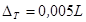
где L - ширина водной преграды при среднем рабочем уровне воды с учетом длины урезных участков траншеи, м;
б) при ширине водной преграды от 1000 м до 2000 м на среднем участке траншеи длиной 1000 м (по 500 м от середины водной преграды в сторону обоих берегов) DT определяют по табл. 3;
на остальных участках траншеи DT = 5 м.
Таблица 3
|
Величина запаса DT на среднем участке траншей общей длиной 1000 м (м) |
|
|
1250 |
6,0 |
|
1500 |
7,0 |
|
1750 |
8,0 |
|
2000 |
9,0 |
При строительстве переходов через водные преграды шириной более 2000 м или укладке трубопровода способом свободного погружения с плавучих средств величина запаса DT определяется проектом с учетом принятой технологии укладки и гидрологических условий.
3.1.6. Запас ширины траншеи на заносимость DЗ следует учитывать только для русловых участков перехода, где средние скорости течения - 0,5 м/с и более. При этом величину DЗ следует определять из выражения
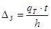
где qт - средняя интенсивность отложения донных наносов на 1 м фронта траншеи при среднем рабочей уровне воды, определяемая расчетом (указывается проектом);
t - продолжительность заносимости траншеи, определяемая в проекте организации строительства, сут;
h - проектная глубина траншеи, м.
В тяжелых и скальных грунтах запас на заносимость траншеи не учитывается в связи с необходимостью подчистки траншеи перед укладкой трубопровода. Объем грунта, удаляемого при подчистке траншеи, определяется в проекте.
При определении ширины подводной траншеи, разрабатываемой канатно-скреперной установкой, увеличение объема песчаного грунта вследствие заносимости траншеи учитывается в проекте.
3.1.7. Если расчетная ширина траншеи по формуле (1) меньше технологической ширины, необходимой для работы земснаряда, то проектную ширину траншеи принимают равной
где BЗЕМ.МИН - минимальная ширина прорези, определяемая конструктивными особенностями земснаряда (например, шириной рабочего органа и технологией его работы);
DP - допустимые отклонения по ширине траншеи согласно III части СНиП 3.02.01-87.
3.1.8. Ширину подводных траншей на мелководных участках следует принимать с учетом ширины и осадки грунторазрабатывающего судна (с запасом под днищем), возможных колебаний уровня воды, необходимой глубины в границах рабочих перемещений судна, а также перемещений обслуживающих средств (например, грунтовозных шаланд).
3.1.9. При скреперовании траншеи следует предусмотреть ее перезаглубления по отношению к проектным отметкам для обеспечения необходимой ширины.
Величину перезаглубления определяют из выражения
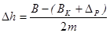
где B - проектная ширина траншеи по дну, м;
BK - ширина скреперного ковша (1,5 - 2,5), м;
DP - запас, учитывающий отклонения по ширине траншеи при скреперовании, м (см. табл. 2);
m - коэффициент заложения откоса траншеи.
3.1.10. На участках рек и водоемов, сложенных скальными грунтами, при пересечении водных преград шириной более 3,0 км, укладке нескольких трубопроводов в одной траншее, заглублении предварительно проложенного по дну трубопровода ширина подводных траншей определяется проектом с учетом технических характеристик используемых средств, технологии укладки и заглубления трубопроводов. Применять формулы (1) - (5) в указанных случаях не следует.
3.1.11. При укладке трубопроводов с кривыми вставками в соответствии с проектом на переходах через малые роки применяют метод опускания с разворотом относительно оси подводной траншеи; при этом ширину в каждом случае определяют с учетом глубины воды и угла поворота трубопровода.
3.2. Подводные земляные работы.
3.2.1. Перед началом земляных работ необходимо обследовать участки дна реки или водоема. Обнаруженные препятствия в виде топляков и отдельных валунов следует устранить отмывкой гидромониторами (грунтососами) с последующим подъемом плавучими грузоподъемными средствами при участии водолазов.
3.2.2. При устройстве подводной траншеи участок, подвергающийся интенсивному заносу, разрабатывают в последнюю очередь, непосредственно перед укладкой трубопровода.
3.2.3. Для устройства подводных траншей можно применять:
землечерпательные ковшовые снаряды;
землесосные рефулерные снаряды;
гидромониторно-эжекторные снаряды;
канатно-скреперные установки;
взрывной способ.
Тип механизма для выемки подводного грунта следует выбирать в зависимости от его физико-механических свойств, объема выемки, гидрологического режима, условий судоходства, глубины водоема, периода (времени года) производства работ (прил. 1).
Плавучие грунторазрабатывающие снаряды следует выбирать с учетом продолжительности навигационного периода и времени буксировки снаряда на объект.
3.2.4. В случае разработки траншей через судоходные реки и водохранилища (при больших объемах и глубинах) рекомендуется совмещать работу высокопроизводительных земснарядов, имеющих недостаточную глубину опускания рамы, с работой специальных земснарядов меньшей производительности, но с большей глубиной опускания рамы для разработки подводных траншей до проектных отметок.
3.2.5. Разработку траншей на прибрежных участках следует выполнять бульдозерами и экскаваторами с учетом обводненности грунтов и правил техники безопасности (см. прил. 1).
3.2.6. Разработку траншей на заболоченных поймах следует, как правило, начинать с урезной части перехода для обеспечения стока воды в реку и дренирования пойм.
3.2.7. После выполнения земляных работ к наряд-заданию следует прилагать план подводного перехода.
3.2.8. Для разработки и извлечения тяжелых и скальных грунтов при строительстве подводных переходов следует применять:
на береговых и урезных участках русел рек - сухопутную землеройную технику с навесным оборудованием (экскаваторы и бульдозеры);
на русловых участках - плавучие одночерпаковые земснаряды (штанговый, гидравлический), многочерпаковые земснаряды.
3.2.9. Подводная разработка тяжелых грунтов различной прочности может производиться земснарядами, КСУ (канатно-скреперные установки) и грейферами с предварительным рыхлением (частичным или сплошным) механическим или взрывным способами в обоснованных проектом случаях.
3.2.10. На крупных переходах с большим объемом разработки тяжелых и скальных грунтов работу земснарядами необходимо выполнять в соответствии с проектом производства работ или индивидуальной технологической картой, которую разрабатывает строительная организация перед началом работы с учетом фактических условий на переходе.
3.2.11. При строительстве переходов с большим объемом разработки тяжелых и скальных грунтов тип механизмов для работы на береговых и русловых участках следует выбирать на основании технико-экономических расчетов, с учетом себестоимости рыхления, извлечения и удаления грунта различными механизмами, которые использованы на данном переходе.
3.2.12. Необходимость производства взрывных работ при устройстве подводных траншей на переходах устанавливает проектная организация с учетом требований по охране окружающей среды и техники безопасности.
Подводные взрывные работы могут быть выполнены методами накладных, шпуровых и скважинных зарядов. При выборе способа взрывных работ следует учитывать:
сохранность расположенных рядом сооружений;
гидрологические и геологические условия на участке подводной траншеи;
расчетную глубину подводной траншеи;
влияние взрывов на ихтиофауну.
Метода взрывных работ, максимальный вес взрываемых зарядов и безопасное расстояние определяет проектная организация и указывает их в проекте организации строительства подводного перехода.
3.2.13. Заряды следует укладывать на скальное дно водоема, очищенное от илистых и песчаных наносов. Очистку от наносов выполняют гидромониторами или грунтососами. Рекомендуется использовать заряды взрывчатых веществ направленного действия.
3.2.14. При разработке подводных траншей осуществляют постоянный метрологический контроль качества выполнения работ.
3.2.15. Документация по проверке качества и приемке земляных работ при строительстве подводного перехода должна соответствовать ВСН 012-88/Миннефтегазстрой «Строительство магистральных и промысловых трубопроводов. Контроль качества и приемка работ» (см. п. I. II.), (приложение 8).
3.2.16. Места отвалов грунтов при подводных выемках следует выбирать с учетом технологии подводных земляных работ, условий судоходства и лесосплава и согласовывать с заинтересованными организациями.
3.2.17. При заглублении, подводных трубопроводов, предварительно уложенных по дну, в проекте производства работ должны быть указаны величина допустимого заглубления трубопровода за одну проходку (которая определяется расчетом напряженного состояния трубопровода), число проходок, очередность выполнения работ.
3.2.18. Подводные траншеи с уложенным трубопроводом засыпают местным грунтом, если в проекте перехода не предусмотрены особые условия для засыпки траншеи другим материалом.
Засыпку подводных траншей можно выполнять рефулированием грунта земснарядами или с использованием плавучих транспортных средств. Способ засыпки траншей выбирают в зависимости от производства работ в зимний или летний периоды, ширины траншеи, глубины воды, скоростей течения и объемов работ. В зимний период допускается засыпка траншей самосвалами при достаточной прочности льда.
3.2.19. Разработку подводных траншей при расположении в коридоре двух или более ниток трубопроводов следует начинать с нижней по течению нитки трубопровода.
4. БАЛЛАСТИРОВКА ПОДВОДНЫХ ТРУБОПРОВОДОВ
4.1. Общие требования
4.1.1. Тип и конструкцию железобетонного покрытия труб или отдельных грузов, монтируемых на трубопроводе, устанавливают в проекте перехода и согласовывают со строительной организацией. Изменение конструкции балластировки при строительстве согласовывают с проектной организацией.
4.1.2. При строительстве русловых участков подводных переходов применяют железобетонные кольцевые грузы из обычного (плотностью не ниже 2300 кг/м3) или тяжелого бетона, шлаколитные кольцевые грузы, чугунные грузы и железобетонные покрытия труб, наносимые, как правило, в заводских условиях.
При строительстве пойменных участков подводных переходов для балластировки трубопроводов применяют отдельные грузы, бетонные покрытия, а также закрепление трубопроводов анкерами.
4.1.3. При изготовлении утяжелителей и железобетонных покрытий труб диаметром 720 мм и более рекомендуется применять тяжелый бетон для уменьшения объема бетонных работка также затрат на транспортировку грузов и обетонированных труб.
4.1.4. Конструкция отдельных грузов, методы их монтажа и закрепления на трубопроводе должны исключать необходимость последующих водолазных работ.
4.1.5 Состав обычного или тяжелого бетона должен обеспечивать заданные проектом и ТУ объемную плотность, марку по прочности, морозостойкости и водонепроницаемости.
4.1.6. При изготовлении утяжеляющих железобетонных грузов и покрытий труб следует постоянно контролировать качество исходных материалов, свойства бетона, производство бетонных работ и качество готовых изделий.
4.1.7. При контроле качества исходных материалов проверяют их соответствие требованиям действующих стандартов.
4.2. Монолитные бетонные покрытия трубопроводов
4.2.1. В проекте производства работ обетонирование трубопроводов на строительстве переходов целесообразно предусматривать в теплое время года и при условии, когда возможна постоянная доставка специальным транспортом товарного бетона.
4.2.2. Для обетонирования используют трубы, предусмотренные проектом и соответствующие всем требованиям СНиП на проектирование магистральных трубопроводов, действующим стандартам и техническим условиям
Запрещается обетонирование труб при отсутствии на них заводских сертификатов о соответствии техническим условиям и о проведении заводского гидравлического испытания.
Завод (полигон) железобетонных изделий получает стальные трубы с сертификатами, которые передает стройорганизации по акту вместе с обетонированными трубами и сертификатами на готовую продукцию.
4.2.3. Применение обетонированных труб на строительстве переходов магистральных трубопроводов в каждом отдельном случае согласовывается на стадии проектирования со строительной организацией.
Конструкция бетонного покрытия труб и тип антикоррозионной изоляции определяются проектом перехода. Расчетные параметры обетонированных труб приведены в табл. 2 справочного приложения 6.
4.2.4. Для выполнения сварки и изоляции стыка труба с обоих концов должна иметь необетонированные участки (в том числе участки с изоляционным покрытием) длиной 300 - 350 мм. Длина неизолированных участков по концам труб, обетонированных в опалубке не должна превышать 150 мм. Изменение указанных параметров должно быть обосновано в ППР.
4.2.5. Места сварки отдельных обетонированных труб в секции или плети должны быть заизолированы. Изоляционное покрытие в местах сварных соединений по своим свойствам должно быть аналогично изоляции трубопровода.
4.2.6. Поставляемые заводом обетонированные трубы должны иметь маркировку, в которой обязательно должны быть указаны марка изделия, номер трубы, дата изготовления, масса обетонированной трубы с точностью до 1%, штамп ОТК.
4.2.7. Для уменьшения изгибной жесткости обетонированных труб бетонное покрытие может иметь кольцевые прорези. Необходимость такого конструктивного решения определяет проектная организация с учетом напряжений в стенках стальной трубы в необетонированных зонах.
4.2.8. Обетонированные трубы с завода на строительную площадку подводного перехода следует транспортировать с деревянными прокладками для предупреждения повреждения бетонного покрытия труб.
4.2.9. Гидравлические испытания плетей трубопроводов из обетонированных труб производят в два этапа: до укладки плетей и после их укладки в соответствии с требованиями, указанными в СНиП III-42-80.
Поперечные стыки плетей из обетонированных труб на первом этапе испытаний должны быть открытыми. Изоляцию и защитное покрытие на них следует наносить только после предварительного испытания трубопровода на давление, указанное в проекте.
4.3. Балластировка подводных трубопроводов кольцевыми грузами (утяжелителями)
4.3.1. Кольцевые железобетонные грузы типа УТК (утяжелитель подводный кольцевой) и чугунные грузы являются в настоящее время основными конструкциями утяжелителей, используемых для балластировки подводных трубопроводов на переходах.
4.3.2. Кольцевые железобетонные грузы типа УТК состоят из двух охватывающих трубу полуколец, соединенных между собой посредством шпилек и гаек (рис. 1). Основные размеры грузов типа УТК для труб диаметром 1020-1420 мм приведены в табл. 4 и на рис.2.
4.3.3. Грузы устанавливают на трубы, имеющие антикоррозионную изоляцию и защищенные деревянной футеровкой толщиной 30 мм. Для изготовления грузов применяют бетон класса В 30 с объемной плотностью не ниже 2300 кг/м3.
Таблица 4
|
Размеры, мм |
Масса полукольца, кг |
Масса комплекта, кг |
|||||
|
R |
H |
d |
b |
l |
|||
|
2-УТК-1020-24-2 |
550 |
725 |
195 |
300 |
70 |
2035 |
4087 |
|
2-УТК-1220-24-2 |
655 |
870 |
235 |
410 |
70 |
2938 |
5893 |
|
2-УТК-1420-24-2 |
755 |
1015 |
280 |
500 |
80 |
4068 |
8151 |
Рис. 1. Железобетонный утяжелитель типа 2-УТК:
1 - утяжелитель 2-УТК; 2 - шпилька МС 1; 3 - шайба МС 3; 4 - гайка М20
Рис. 2. Полукольцо утяжелителя типа 2-УТК
4.3.4. Весовые характеристики труб с утяжелителями объемной плотностью бетона 2300 кг/м3 приведены в табл.1 справочного приложения 6.
Условное обозначение марки утяжелителя состоит из цифровых и буквенных обозначений. Марка расшифровывается следующим образом (например, 2-УТК-1420-24-2):
2 - в начале марки означает изменение в конструкции и армирование по сравнению с ранее выпущенными моделями;
У - утяжелитель железобетонный;
Т - для трубопроводов;
К - кольцевой;
1420 - диаметр трубы, мм;
24 - длина утяжелителя, дм;
2 - в конце марки указывает, что утяжелители имеют большую массу по сравнению с ранее выпускавшимися.
4.3.5. При проверке качества изготовления грузов особое внимание следует уделить:
чистоте отверстий под соединительные шпильки, не допуская попадания бетона в эти отверстия. Поставка утяжелителей с заплывшими отверстиями должна быть запрещена;
точности расположения отверстий под соединительные шпильки и недопустимости их смещения ж теле бетона;
качеству процесса вибрации бетона для получения необходимой его плотности;
точности расположения монтажных петель на боковых поверхностях полуколец; установка их на верхней образующей грузов недопустима;
4.3.6. При монтаже утяжелителей на нескольких плетях трубопровода расстояние между плетями должно обеспечивать проезд трубоукладчиков, кранов, автомашин для выполнения сварочно-монтажных, изоляционных и других работ.
Нижние и верхние кольца утяжелителей раскладывают параллельно подготовленным плетям трубопровода в два ряда вдоль оси трубы (рис. 3) с интервалом в соответствии с проектом.
4.3.7. Зафутерованный трубопровод с помощью трубоукладчиков укладывают на нижние элементы, после чего на них устанавливают верхние элементы утяжелителей. Шпильки вставляют в отверстия утяжелителей сверху, при этом верхние гайки должны быть навинчены на болт (не более чем на собственную высоту). Нижние гайки наворачивают на шпильку вручную без инструмента до отказа. Затем верхние гайки доворачивают гайковертом до получения следующих значений моментов сил: шпилька диаметром 20 мм - 15 кг×м; шпилька диаметром 24 мм - 26 кг.
4.3.8. Погрузку, разгрузку, складирование и раскладку полуколец утяжелителей производят за монтажные петли кранами или трубоукладчиками соответствующей грузоподъемности.
Элементы утяжелителя можно поднимать как прямо, так и в перевернутом положении. Перевертывать элементы утяжелителя (из прямого положения) допускается за две петли, но при этом элементы не должны отрываться от земли.
4.3.9. Железобетонные элементы кольцевых утяжелителей, рассортированные по маркам и комплектам, должны храниться в штабелях на приобъектных складских площадях с выровненным плотным основанием. Нижний и последующие ряды элементов укладывают на деревянные подкладки высотой 80 и шириной 100 мм. Подкладки располагают у монтажных петель по вертикали одна над другой. Изделия укладывают в штабеля высотой не более 2,5 м.
При хранении, транспортировки и монтаже элементов утяжелителей нельзя загибать монтажные петли.
4.3.10. На береговом участке монтаж железобетонных грузов на первую плеть производят в створе перехода (см. рис.3), при использовании спусковой дорожки - рядом с ней. Строповку балластированного трубопровода при его подъеме и перекладке следует осуществлять в местах расположения опорных частей утяжелителей.
4.3.11. Для уменьшения числа и мощности трубоукладчиков, необходимых для перемещения плети в створ перехода, допускается установка грузов на плеть, находящуюся в створе. Однако при этом перерыв в процессе протаскивания определяется не временем, необходимым на сварку стыка около уреза воды, а значительно большим временем, необходимым на установку и закрепление грузов типа УТК.
Для сокращения этого времени можно установить и закрепить на плетях трубопровода, расположенных параллельно спусковой дорожке, только часть утяжелителей УТК, а остальные смонтировать на плеть после ее перемещения в створ перехода.
Рис. 3. Схема раскладки плетей трубопровода диаметром 1020 и 1220 мм при монтаже утяжелителей типа УТК:
1-11 - последовательность монтажа утяжелителей на плеть трубопровода; I - плеть трубопровода; 2- полукольца утяжелителей; 3- трубоукладчик.
5. УКЛАДКА ПОДВОДНЫХ ТРУБОПРОВОДОВ НА ПЕРЕХОДАХ
5.1.1. Существуют следующие способы укладки подводных трубопроводов, предусмотренные в ППР:
протаскивание трубопровода или отдельных его плетей по дну водоема (траншеи);
свободное погружение (опускание) плавающего трубопровода на дно при заполнении его водой или откреплении понтонов, удерживающих трубопровод на поверхности водоема;
укладка с трубоукладочных судов;
опускание трубопровода с помощью плавучих кранов.
5.1.2. Технология укладки трубопровода на дно водоема (траншеи) должна быть разработана с учетом следующих факторов:
назначения трубопровода;
топографических условий в створе перехода (крутизна береговых откосов, рельеф пойменного участка, ширина пересекаемого водоема);
диаметра трубопровода, его массы, прочностной характеристики;
гидрологического режима водоема, периода (времени года) производства работ, условий судоходства и лесосплава;
экономичности применяемого способа работ.
5.1.3. При составлении проекта производства работ на укладку подводного трубопровода должны быть рассчитаны строительные нагрузки на трубопровод и напряжения, возникающие в нем при укладке, с учетом скорости течения и профиля спусковых устройств. При разработке технологии укладки трубопровода способом протаскивания по дну необходимо определить:
массу (вес) трубопровода с грузами, без грузов, с понтонами в воде и на суше;
силу воздействия потока воды на трубопровод (лобовое сопротивление);
возникающие тяговые усилия и максимально допустимое тяговое усилие;
число и грузоподъемность разгружающих понтонов.
При необходимости предусматривают технические мероприятия для уменьшения напряжений, возникающих в укладываемом трубопроводе.
5.1.4. При разработке проекта производства работ необходимо выполнить расчет устойчивости положения трубопровода в процессе укладки с учетом фактической скорости течения при укладке и других возможных параметров (расстановка понтонов, радиус изгиба и др.). Перед укладкой трубопровода необходимо:
проверить и испытать все технические средства и их взаимодействие, проверить средства связи, провести инструктаж персонала и определить ответственность каждого исполнителя за свой участок работы;
проверить отметки продольного профиля траншеи, а также профиль спусковых устройств при участии представителей технического надзора;
проверить расчет устойчивости положения трубопровода.
5.1.5. После проверки изоляции способом катодной поляризации уложенный подводный трубопровод сваривают с пойменным участком перехода.
Для уменьшения напряжений в уложенном подводном трубопроводе приварку его к пойменному участку рекомендуется производить при температурах, близких к температуре перекачиваемого продукта.
5.1.6. После гидравлического испытания уложенного трубопровода воду из него удаляют. Перед тем как пропустить поршни, шары или другие устройства, вытесняющие воду, следует до подводного перехода (по ходу поршня) установить на трубопроводе вентили или задвижки достаточного сечения для выхода воздуха.
5.1.7. Засыпка подводной траншеи, в которую уложен трубопровод, разрешается только после контрольных промеров, подтверждающих укладку трубопровода на проектные отметки, и гидравлического испытания уложенного трубопровода.
5.1.8. При укладке трубопровода с баржи или монтаже его поточно-расчлененным способом в створе перехода предусмотренный СНиП III-42-80 1 этап испытаний не производится.
Все трубы и электроды, поступающие на строительно-монтажную площадку перехода, должны иметь маркировку на каждой трубе (пачке электродов) с указанием ТУ. При отсутствии сертификатов для комплекта исполнительной документации составляется документ, подтверждающий ТУ используемых труб и электродов, а также выбранный технологический режим сварки (при этом подогрев производится по верхней границе эквивалента углерода данного ТУ).
5.2. Укладка трубопровода способом протаскивания по дну
5.2.1. Укладка трубопровода способом протаскивания по дну подводной траншеи рекомендуется в случае:
плавного рельефа одного из берегов в створе переходов, при котором возможна планировка на этом участке в соответствии с допустимым радиусом изгиба трубопровода при его протаскивании;
необходимости укладки трубопровода в летний период через судоходные водные преграды;
наличия площадки достаточных размеров в створе перехода для устройства спусковой дорожки, на которую укладывают нитку трубопровода перед протаскиванием;
достаточной прочности протаскиваемого трубопровода с учетом воздействия на него тяговых усилий.
5.2.2. В технологический процесс укладки трубопровода способом протаскивания по дну водоема входят:
устройство и оборудование спусковой дорожки;
укладка трубопровода на спусковую дорожку;
оснащение трубопровода понтонами (при необходимости);
проверка готовности подводной траншеи (промеры глубин и проверка отметок дна траншеи);
установка и закрепление тяговых средств;
приварка оголовка и прокладка тяговых тросов с закреплением их на оголовке;
протаскивание всей нити трубопровода или отдельных секций (плетей) со сваркой межсекционных стыков;
контроль положения уложенного в соответствии с проектом трубопровода.
5.2.3. Разгружающие понтоны применяются для уменьшения веса (отрицательной плавучести) участка трубопровода, находящегося под водой, и соответственно уменьшения тяговых усилий.
Для укладки трубопроводов рекомендуется использовать специальные понтоны, снабженные устройством для их отстропки.
Допускается применение понтонов других конструкций при условии надежного их крепления к трубопроводу и обеспечения безопасности работ.
Все применяемые понтоны должны иметь достаточную прочность для сопротивления гидростатическому давлению воды.
5.2.4. Конструкция спусковой дорожки должна обеспечивать возможность монтажа и сварки на ней плетей трубопровода из отдельных обетонированных или балластированных грузами труб, а также навеску отдельных грузов на плеть трубопровода.
5.2.5. В зависимости от длины укладываемой нитки (плети) трубопровода, его диаметра и массы, а также рельефа прибрежного участка спусковая дорожка может быть устроена следующим образом:
с роликоопорами на спланированном участке территории в створе перехода;
рельсовый путь с тележками;
береговая траншея, заполняемая водой;
безрельсовые тележки и другие приспособления.
Протаскивание отдельных плетей трубопроводов по спланированной грунтовой дорожке без специальных спусковых устройств допускается только при обязательной тщательной планировке берегового участка.
5.2.6. Спусковую дорожку в плане трассируют, как правило, прямолинейно. Вертикальная трассировка ее на перепаде отметок от берега до подводного участка должна быть выполнена криволинейно с учетом допускаемого радиуса упругого изгиба трубопровода.
Длина спускового пути должна обеспечивать монтаж трубопровода на полную длину его подводного участка или длину отдельных плетей, если Протаскивание ведется с последовательным наращиванием плетей трубопровода.
Расстояние между роликоопорами или тележками, которые устанавливают вдоль спусковой дорожки, рассчитывают в зависимости от грузоподъемности и массы трубопровода.
Минимальный радиус кривизны спускового пути и соответствующий ему радиус упругого изгиба трубопровода определяют с учетом возможных силовых воздействий, вызывающих продольные напряжения в трубопроводе на спусковом пути.
Продольные напряжения внутреннего давления при расчете не учитывают, если гидравлические испытания плетей трубопровода проводят до их укладки на спусковую дорожку.
В трубопроводе, лежащем на спусковой дорожке, продольные напряжения от температурного перепада не возникают.
5.2.7. В трубопроводе, находящемся на грунтовой спусковой дорожке, возникающие продольные напряжения должны быть рассчитаны в ППР по формуле:
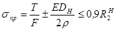
где sпр - суммарные продольные напряжения в трубопроводе;
Т - максимальное тяговое усилие, прикладываемое к трубопроводу, лежащему на спусковой дорожке, кН;
F - площадь сечения трубы, см2;
E - модуль упругости стали, 2,1 х 104 кН/см;
DН - наружный диаметр трубы, см;
r - радиус кривизны спускового пути, см;
R2н - нормативное сопротивление металла трубы, принимаемое равным минимальному значению предела текучести, кН/см2.
Из уравнения (6) можно найти минимальный радиус кривизны пути. При таком радиусе трубопровод можно передвигать вдоль спусковой дорожки без его подъема с дополнительным изгибом трубоукладчиками.
5.2.8. Для уменьшения тяговых усилий, необходимых для протаскивания трубопроводов спусковая дорожка должна иметь уклон в сторону воды. Для предупреждения самопроизвольного перемещения плетей необходимо предусмотреть специальные тормозные устройства (например, тормозную лебедку).
Предельный угол наклона спусковой дорожки, при котором возможно самопроизвольное движение плетей трубопровода под действием силы тяжести, можно определить из условия
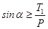
или
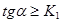
где a - угол наклона спусковой дорожки, при котором возможно самопроизвольное движение плети трубопровода;
T1 - тяговое усилие, необходимое для преодоления сил трения 1 м оснащенного трубопровода, перемещаемого по спусковой дорожке, кН/м;
P - вес 1 м трубопровода, включая оснастку, кН/м;
K - коэффициент трения скольжения, зависящий от конструкции спусковой дорожки.
5.2.9. Для спусковых устройств с малым коэффициентом трения (ролики, вагонетки) протаскивание трубопровода осуществляется с приложением постоянного тормозного усилия к заднему концу трубопровода.
Тележки или роликовые спусковые дорожки должны обеспечить:
равномерное распределение нагрузки от веса монтируемых и перемещаемых плетей трубопровода;
устойчивость от бокового смещения и соскальзывания трубопровода во время монтажа и спуска на воду;
возможность сварки стыков между отдельными плетями, звеньями или трубами, расположенными на спусковой дорожке.
5.2.10. При использовании в качестве спускового пути береговой траншеи, заполненной водой, глубину ее принимают равной диаметру балластированного трубопровода с дополнительным запасом 0,6 - 0,8 м. Ширину траншеи по дну следует принимать не менее двух диаметров трубопровода.
5.2.11. В качестве тяговых средств для протаскивания подводного трубопровода в зависимости от необходимого тягового усилия рекомендуется применять специальные тяговые лебедки серии ЛП (лебедка протаскивания), тягачи, оборудованные лебедками, а также однотипные тракторы, работающие в сцепе.
Тракторы следует использовать при строительстве небольших переходов и тяговых усилий до 20 - 30 т.
Если тракторы не могут перемещаться в створе перехода, то допускается их перемещение вдоль берега с закреплением на берегу блока для изменения направления тягового троса.
5.2.12. При протаскивании трубопровода, если мощность тяговых средств недостаточна, можно использовать трубоукладчики для подъема отдельных участков трубопровода, находящегося на берегу. Для трубопроводов диаметром менее 1020 мм нельзя прикладывать к трубопроводу дополнительные толкающие усилия, при диаметре 1020 мм и более - величина толкающих усилий и необходимость их приложения должны быть обоснованы расчетом в проекте производства работ.
5.2.13. При расчете тяговых усилий для трубопроводов, протаскиваемых по грунту, рекомендуется принимать значения коэффициентов трения скольжения и трогания, приведенные в приложении 7 (табл. 1, 2).
5.2.14. Вес трубопровода, балластированного железобетоном, возрастает с увеличением времени нахождения его в воде (за счет водопоглощения железобетона). Этот фактор необходимо учитывать при балластировке согласно СНиП 2.05.06-85 и при расчете тяговых усилий. При полном водопоглощении железобетона его вес может увеличиться на 4%.
5.2.15. Тяговый трос через водоем должен быть приложен строго прямолинейно. Перед протаскиванием трубопровода необходима обтяжка тягового троса.
5.2.16. К головному концу протаскиваемого трубопровода приваривают оголовок для крепления тягового троса. Конструкция оголовка может быть различной и зависит от: диаметра трубопровода; способа крепления троса и величины тягового усилия; необходимости заполнения трубопровода водой в процессе его протаскивания по дну.
5.2.17. В процессе протаскивания трубопровода все рабочие посты (тяговая лебедка, тормозная лебедка, сварочный пост около уреза берега) должны иметь двустороннюю: дублированную связь с пунктом управления, который следует размещать около спусковой дорожки. С пункта управления должен быть обеспечен визуальный обзор всей спусковой дорожки. Должны быть отработаны условные сигналы движения и остановки трубопровода, которые в зависимости от ширины водной преграды можно передавать с пункта управления по телефону с помощью портативных радиостанций и дублировать световыми сигналами.
5.2.18. В зависимости от ширины водной преграды, рельефа берега, наличия спусковых устройств и понтонов, мощности трубоукладчиков и тяговых средств можно применять две технологические схемы укладки подводных трубопроводов способом протаскивания по дну:
Схема I - протаскивание трубопровода с предварительным монтажом его на полную длину в створе перехода;
схема II - последовательное протаскивание отдельных плетей трубопровода со стыковкой их на приурезном участке.
Укладка по схеме 1 может быть применена на переходах через сравнительно небольшие водные преграды (шириной до 300-500 м), где рельеф берега позволяет смонтировать спусковую дорожку и плеть трубопровода длиной, равной ширине водной преграды.
5.2.20. Технологический процесс укладки отдельных плетей трубопроводов по схеме II включает: монтаж первой плети в створе перехода с выполнением всех операций, предусмотренных при укладке по схеме I (п. 5.2.19); монтаж, испытание второй и последующих плетей на строительной площадке параллельно первой плети. После протаскивания первой плети вторую плеть устанавливают на спусковую дорожку; на приурезном участке сваривают стык между первой и второй плетью, стык просвечивают и изолируют. После протаскивания второй плети устанавливают в створе третью плеть и т.д.
5.2.21. Длину плетей трубопровода, подготавливаемых к укладке, определяют в проекте производства работ в зависимости от ширины водной преграды, мощности тяговых средств, конструкции спускового пути, числа трубоукладчиков.
5.2.22. Для приварки очередной плети трубопровода должна быть предусмотрена такая расстановка трубоукладчиков, при которой обеспечивается операция по центровке труб на береговом участке.
Число трубоукладчиков и расстояния между ними определяются проектом производства работ.
5.2.23. К сварке межсекционных (гарантийных) стыков между отдельными плетями трубопровода в процессе укладки могут быть допущены сварщики не ниже шестого разряда. Сборка и сварка межсекционных стыков должны производиться под контролем инженерно-технического работника, ответственного за сооружение подводного перехода. До протаскивания очередной плети наращиваемого трубопровода качество сварки межсекционного стыка проверяют физическими методами контроля. Результаты заносят в журнал сварочных работ (см. приложение 8).
5.2.24. Монтаж плетей трубопровода из обетонированных в заводских условиях труб по схеме II производится следующим образом (рис. 4).
Обетонированные трубы с приобъектного склада трубоукладчиком доставляют на сварочный стенд и выполняют поворотную сварку двух труб. Двухтрубные звенья на место сборки и сварки плетей доставляют двумя трубоукладчиками. Из двухтрубных звеньев параллельно спусковой дорожке собирают и сваривают необходимое число плетей заданной длины. Плети трубопровода подвергают гидравлическому испытанию. После испытания плетей стыки изолируют и наносят на них защитное покрытие. После протаскивания первой плети, смонтированной, как правило, в створе перехода, вторую плеть укладывают на спусковую дорожку, стыкуют с первой и продолжают протаскивание.
Первую плеть монтируют и сваривают параллельно спусковой дорожке в непосредственной близости от нее. Вторую и последующие плети собирают и сваривают на монтажной площадке параллельно первой плети.
Перед изоляцией стыков обетонированных труб производят гидравлическое испытание плетей трубопровода. При визуальном обнаружении места утечки имеющую дефект трубу вырезают. Если утечку обнаруживают по показаниям манометра то для определения дефекта трубы давление в плети выдерживают до появления воды на поверхности бетонного покрытия или в зоне стыка. Чтобы ускорить определение мест утечки рекомендуется добавлять краситель в опрессовочную воду.
Рис. 4. Укладка обетонированного трубопровода методом последовательного протаскивания плетей (схема II):
1 - тормозная лебедка; 2 - спусковая дорожка; 3 - тележки; 4 - плеть на спусковой дорожке; 5 - место сварки стыка; 6 - автокран; 7 - приямок для схода тележек; 8 - плеть трубопровода, подготовленная к укладке; 9 - электросварочный агрегат; 10 - звено из двух обетонированных труб; 11 - трубоукладчики; 12 - стенд для сварки двухтрубных звеньев
Для поперечной перекладки плетей отдельные участки трубопровода поднимают и переносят с помощью колонны трубоукладчиков, последовательно перемещающейся вдоль плетей.
5.2.25. Технологический процесс монтажа и укладки отдельных плетей трубопроводов, забалластированных кольцевыми грузами типа УТК, включает монтаж первой плети в створе перехода с выполнением всех операций, предусмотренных при укладке по схеме 1 (см. п. 5.2.19) монтаж и испытание второй и последующих плетей на строительной площадке параллельно первой плети; балластировку грузами УТК; перемещение плетей в створ перехода и их последовательное протаскивание со сваркой стыков между плетями около уреза и воды.
Строительная площадка, на которой подготавливают плети трубопровода к укладке, должна быть предварительно выровнена.
Монтаж утяжелителей типа УТК выполняют на строительно-монтажной площадке после подготовки плетей трубопровода в соответствии с разделом 4.3. настоящих норм. Работы могут выполняться как в зимнее, так и в летнее время.
Плети трубопровода, балластируемого сборными утяжелителями типа УТК, можно монтировать из отдельных секций, сваренных из трех труб. Из этих секций на строительно-монтажной площадке параллельно спусковой дорожке собирают и сваривают необходимое число плетей заданной длины и проводят их гидравлическое испытание в соответствии с п. 5.2.24 настоящих норм.
5.3. Укладка трубопровода способом протаскивания с поточно-расчлененным монтажом в створе перехода
5.3.1. Технология строительства подводных переходов с поточно-расчлененным монтажом трубопровода в створе перехода исключает необходимость предварительного монтажа плетей трубопровода с их поперечным перемещением на спусковую дорожку, а также сварку гарантийных стыков около уреза воды.
Монтаж выполняют по технологии, принятой при укладке трубопровода с трубоукладочного судна (см. п.5.5 настоящих норм).
Весь процесс строительства подводного перехода (за исключением земляных работ) является непрерывным, что позволяет значительно повысить производительность строительно-монтажных работ, сократить перерывы между последовательным протаскиванием плетей, уменьшить опасность замыва и присоса трубопровода.
Этот способ укладки рекомендуется применять при строительстве подводных переходов из труб диаметром 1220-1420 км, когда перекладка плетей трубопроводов весьма трудоемка.
5.3.2. Типология строительства подводного трубопровода с поточно-расчлененным монтажом заключается в следующем (см. рис.5). В створе перехода монтируют спусковую дорожку. Вдоль спусковой дорожки на расстоянии, равном длине секций трубопровода, устанавливают следующие рабочие посты:
I - сборки, центровки и прихватки секций;
II-III - сварки стыков;
IV - контроля качества сварки физическими методами;
V - изоляции и защиты стыков.
Подготовленные секции труб укладывают трубоукладчиками на тележки или роликоопоры спусковой дорожки, расположенные напротив первого рабочего поста;
на первом посту с помощью центратора выполняют сборку и прихватку стыка, сварку корневого слоя шва и подварку стыка;
на следующих сварочных постах проводят сварку заполняющих и облицовочных слоев;
контроль готового сварного шва на IV посту, на V посту - нанесение изоляции и осуществление защиты стыка.
5.3.3. На всех рабочих постах, кроме поста контроля, операции выполняют одновременно.
После завершения всех операций на рабочих постах трубопровод протаскивают на длину одной секции, а затем, не возобновляя сварочно-монтажныж работ, стык просвечивают на посту контроля.
Очередную секцию труб, предварительно уложенную на спусковую дорожку, перемещают к первому посту сборки, и цикл работ повторяют. В процессе монтажа и протаскивания трубопровода каждый стык между секциями поочередно проходит все рабочие посты.
5.3.4. Секции, из которых монтируют трубопровод, подают на спусковую дорожку одним или двумя трубоукладчиками. Длину секции выбирают в зависимости от массы труб, грузоподъемности трубоукладчиков, допустимой длины трубопровода, монтируемого на спусковой дорожке.
Для трубопровода диаметром 1220-1420 мм рекомендуются секции длиной 24 м, сверенные из двух труб.
5.3.5. Секции трубопровода могут быть изготовлены из отдельных обетонированных труб или из изолированных и футерованных труб, балластированных утяжеляющими грузами. Грузы можно устанавливать на секции, расположенные на строительно-монтажной площадке или уложенные на начальном участке спусковой дорожки.
5.3.6. Просвеченный на посту контроля гамма-лучами стык нельзя в процессе монтажа и укладки плети погружать в воду до обработки пленки и получения заключения по его качеству.
В случае отрицательного заключения стык следует вырезать и сварить заново, поэтому просвеченный и изолированный стык должен находиться от уреза воды на расстоянии, достаточном для выполнения сварочно-монтажных работ.
5.3.7. Для контроля стыка может быть использован автоматизированный комплекс типа АКП 144.
5.3.8. Длина монтируемого на берегу участка трубопровода зависит от условий и организации строительства (в частности, от длины перехода, числа сварочных постов, длины отдельных секций).
Число сварочных постов вдоль спусковой дорожки может быть различным (от одного до четырех) в зависимости от числа сварщиков в бригаде и допустимой длины трубопровода на береговом участке.
На рис. 5 представлена схема укладки трубопровода диаметром 1420 мм и поточно-расчлененным методом при выполнении работ на постах, в том числе на трех постах сварки бригадой из семи сварщиков.
Длина трубопровода на береговом участке при такой организации работ и длине секций из двух труб 24 м составит не менее 5 х 24 + 30 = 150 м, а длина спусковой дорожки в этом случае должна быть не менее 210 м.
5.3.9. Производительность укладки трубопровода поточно-расчлененным методом зависит от длины монтируемых секций и определяется временем, затрачиваемым на:
выполнение самой длительной операции на одном из рабочих
постов;
просвечивание стыка;
протаскивание плети на длину одной секции.
Сменную (8 ч) техническую производительность укладки можно определить по формуле:
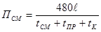
где ПСМ - техническая производительность укладки в смену, м/см;
 - длина секции,
м;
- длина секции,
м;
tСМ - время, затрачиваемое на самую продолжительную операцию на одном из постов, мин;
tПР - время, затрачиваемое на протаскивание плети на длину одной секции, мин;
tК - время на просвечивание стыка, мин.
5.3.10. Профиль спусковой дорожки при поточно-расчлененном методе монтажа и укладки трубопровода должен быть спланирован таким образом, чтобы рабочие посты сборки и сварки секции были расположены на прямолинейном участке или криволинейном с радиусом 5000 м и более.
5.4. Укладка трубопровода свободным погружением
5.4.1. Способ укладки свободным погружением с заполнением полости водой следует применять для трубопроводов, имеющих положительную плавучесть.
5.4.2. Для укладки трубопроводов, положительная плавучесть которых обеспечивается закреплением понтонов, можно применять способ свободного погружения путем последовательного открепления понтонов.
5.4.3. В технологический процесс укладки трубопроводов способом свободного погружения с заполнением их водой входят:
монтаж трубопровода на спусковой дорожке или стапеле (при этом способе укладки трубопровода монтажный стапель можно располагать вне створа перехода);
оснащение трубопровода разгружающими понтонами в соответствии с проектом производства работ, а также вентилями для выпуска воздуха и заливки воды в трубопровод;
спуск трубопровода на воду;
буксировка трубопровода к месту укладки (если монтаж выполняется не в створе сооружения);
установка плавающего трубопровода в створе перехода;
погружение плавающего трубопровода в проектное положение путем заполнения его водой с одновременным выпуском воздуха через вентиль на противоположном конце трубопровода.
Рис. 5. Схема укладки трубопровода диаметром 1420 мм поточно-расчлененным методом:
I - пост сборки и сварки корневого шва; II - пост сварки первого, второго и третьего слоев шва; III - пост сварки четвертого и пятого слоев ива; IV - пост контроля стыка; V - пост изоляции и защиты стыка; 1 - рельсовая или роликоопорная спусковая дорожка; 2 - звано из двух забалластированных труб на спусковой дорожке; 3 - штанга внутреннего центратора; 4 - внутренний центратор; 5 - защитная палатка; 6 - монтируемая плоть трубопровода; 7 - гамма-дефектоскоп; 8 - урез воды, 9 - трубоукладчики; 10 - энергоблок для подогрева стыка; 11 - сварочные агрегаты для шлифовальных машин; 13 - командный пункт с радиосвязью
5.4.4. Способ укладки трубопроводов свободным погружением рекомендуется при следующих условиях:
пересекаемая водная преграда несудоходна или в месте перехода возможен перерыв судоходства на время установки трубопровода;
поверхностная скорость течения невелика (до 0,6 - 0,8 м/с) и не требуются сложные устройства для удержания плавающей нитки трубопровода в створе перехода;
трассировка перехода на берегах предусматривает прокладку трубопроводов с кривыми вставками.
вес трубопровода в различных положениях в воде и его массу на суше;
силу воздействия потока воды на трубопровод, необходимость закрепляющих устройств (боковых оттяжек) и их расчет;
допустимую глубину погружения трубопровода при его заполнении водой;
напряжения, возникающие в трубопроводе от воздействия всех нагрузок на трубопровод в процессе погружения на дно (напряжения от изгиба в вертикальной плоскости и гидродинамического давления);
Качество и мощность буксирных средств, необходимых для буксировки трубопровода и заведения его в створ перехода.
5.4.6. Если нельзя устроить спусковые дорожки в створе перехода, монтажную площадку можно расположить вдоль береговой линии с устройством горизонтального стапеля. В этом случае при необходимости следует прикреплять к трубопроводу понтоны на наклонном участке стапеля после перемещения трубопровода к урезу берега.
Для буксировки в створ перехода плавающую нитку трубопровода необходимо оснастить такелажным инвентарем и якорными устройствами на буксировщике, на судоходных реках - обеспечить сигнализацию в соответствии с «Правилами плавания по внутренним судоходным путям РСФСР», утвержденными Минречфлотом СССР.
5.4.7. Если глубина пересекаемой водной преграды больше допустимой для данного трубопровода (см. п.5.4.5.), расчетную допустимую глубину опускания трубопровода можно увеличить одним из следующих способов:
уменьшить начальную плавучесть трубопровода за счет балластировки его до требуемой расчетной величины;
закрепить дополнительные понтоны на участках, где глубина воды превышает допустимую для укладки трубопровода заданного сечения, при этом число понтонов должно соответствовать расчетному;
приложить продольное растягивающее усилие к укладываемому трубопроводу.
5.4.8. Перед укладкой трубопровода способом свободного погружения выше и ниже по течению должны дежурить катера. Трубопровод заводят в створ перехода и расчаливают в продольном направлении тросами и лебедками, закрепленными на берегах. Чтобы трубопровод не мог сместиться под действием течения, используют тросовые растяжки к лебедкам на плавучих опорах, буксиры или плавучие краны. Число удерживающих лебедок и плавучих опор рассчитывают в зависимости от скорости течения и величины гидродинамического давления ветровых нагрузок.
По мере погружения трубопровода тросовые растяжки необходимо постепенно стравливать, не допуская отклонений трубопровода от проектного створа.
5.4.9. Заполнение трубопровода водой является наиболее ответственной операцией и выполняется под наблюдением инженерно-технического персонала, контролирующего положение трубы в различные стадии ее погружения.
Трубопровод заполняют водой с помощью любого имеющегося насоса средней производительности через шланг, подсоединенный к патрубку, вваренному на концевой части трубы; вентили для выпуска воздуха вваривают с обоих концов плети.
Объем залитой воды следует контролировать в процессе наблюдения за положением трубопровода.
5.4.10. При заполнении водой трубопроводов, имеющих положительную плавучесть, необходимо следить, чтобы погружение трубы начиналось с заливаемого конца. Для этого рекомендуется противоположный конец трубы в начальный период поддержать при помощи понтона, плавучих средств или придавить заливаемый конец трубопровода.
Закачку воды в трубопровод следует вести до тех пор, пока полностью не выйдет воздух из воздушного патрубка (не будет пузырьков воздуха).
5.4.11. При укладке трубопровода способом свободного погружения через судоходные водные преграды строительная организация должна согласовать дату и продолжительность перерыва в судоходстве на период укладки трубопровода с соответствующими организациями Минречфлота РСФСР.
5.5. Укладка трубопровода с трубоукладочного судна
5.5.1. Укладке трубопровода с трубоукладочной баржи должны предшествовать следующие работы:
промеры дна и водолазное обследование по створу перехода;
разработка подводной траншеи в границах, определенных проектом;
установка береговой опоры с блоком, изготовление оголовка трубопровода, подготовка оборудования и оснастки, необходимых для выполнения работ на первом этапе укладки;
установка светящихся створных знаков и ограничительных буев;
устройство временных причалов для вспомогательных судов;
устройство площадки для складирования труб;
доставка на переход и подготовка к укладке партии труб на первом этапе укладки.
5.5.2. Укладку трубопровода с трубоукладочной баржи выполняют в соответствии с проектом производства работ, в котором определяют:
последовательность разработки подводной траншеи и укладки трубопровода;
технологические параметры укладки трубопровода на каждом этапе и по участкам трассы (угол наклона стингера, усилие натяжения, отрицательную плавучесть трубопровода, расстояние между понтонами, напряженное состояние трубопровода);
технологическую последовательность работ на каждом этапе укладки;
методы контроля качества выполнения работ.
5.5.3. Работы на барже выполняют круглосуточно и организуют по вахтовому методу.
5.5.4. Укладку с трубоукладочной баржи осуществляют в несколько последовательных этапов (рис.6):
укладывают трубопровод на одном из прибрежных участков протаскиванием к берегу наращиваемой на барже плети;
укладывают трубопровод на русловом участке с перемещением баржи по створу перехода;
укладывают трубопровод на другом прибрежном участке по аналогии с первым этапом;
стыкуют основной и прибрежный участок в единую нитку и опускают трубопровод в траншею.
5.5.5. Трубопровод укладывают с баржи в следующей технологической последовательности:
На I этапе трубоукладочную баржу устанавливают в створе перехода на минимальном удалении от берега, регламентируемом осадкой баржи. Конец троса от лебедки на барже подают на берег, заводят через заанкеренный блок, вытягивают на баржу и закрепляют на оголовке первой трубы, уложенной на монтажной рампе. После этого приступают к монтажу трубопровода, вытягивая его на берег с помощью спусковой лебедки. Шаг подвижки трубопровода соответствует длине стыкуемой трубы или секции. После выхода оголовка трубопровода на берег тяговый трос отсоединяют и сматывают на барабан спусковой лебедки.
На II этапе укладку трубопровода на русловом участке осуществляют путем обычного наращивания укладываемого трубопровода с перемещением баржи. В намеченном месте, удобном для последующей стыковки, трубопровод опускают на дно, предварительно заглушив его конец. Разворачивают трубоукладочную баржу и осуществляют III этап укладки прибрежного участка трубопровода с помощью лебедки на барже, как указано выше.
Рис. 6. Схема прокладки подводного трубопровода на переходе с использованием трубоукладочной баржи:
I, II, III, IV а, б - последовательные этапы монтажа и укладки трубопровода; 1 - трубоукладочная баржа; 2 - трубопровод; 3 - трос спусковой лебедки; 4 - береговая опора с блоком; 5 - тросы кранбалок по борту баржи
На IV заключительном этапе выполняют стыковку прибрежного участка с уложенной ниткой трубопровода. Концы трубопровода поднимают на борт трубоукладочной баржи имеющимися на ней грузоподъемными механизмами, центрируют, сваривают, проверяют качество сварки, изолируют и опускают на дно.
5.5.6. Во избежание недопустимых сжимающих напряжений в трубопроводе и значительного его изгиба перед опусканием состыкованного участка (IV этап) создают предварительное натяжение трубопровода с помощью спусковой лебедки. Усилие натяжения должно быть достаточным для перемещения всего прибрежного участка и вытягивания слабины, равной разности длин криволинейного участка (при стыковке) и его горизонтальной проекции.
5.5.7. Технология сварочно-монтажных работ при наращивании трубопровода, укладываемого с баржи, аналогична приведенной в разделе 5.3. настоящих ВСН.
5.5.8. При разработке проекта производства строительства для укладки трубопровода с баржи определяют форму упругой линии, изгибающие моменты и напряжения в сечениях трубопровода для заданной глубины укладки в зависимости от параметров спусковой рамы (стингера) и натяжных устройств (приложение 5).
5.6. Укладка трубопровода с помощью плавучих кранов
5.6.1. Укладка подводных трубопроводов с использованием плавучих кранов имеет ограниченное применение; в основном этот способ применяется при укладке трубопровода с криволинейными береговыми участками (утками), когда укладка трубопровода протаскиванием по дну или свободным погружением представляет большие трудности.
5.6.2. Для трубопроводов, которые можно заполнить водой перед опусканием на дно, процесс укладки в летних условиях состоит из следующих операций:
монтаж трубопровода и оснащение его понтонами;
перемещение трубопровода со стапеля на воду и буксировка к мосту укладки;
заведение трубопровода в створ буксирами;
заполнение водой трубопровода, удерживаемого на поверхности кранами, и опускание его на дно.
5.6.3. Учитывая сложность укладки трубопровода с помощью плавучих кранов, в проекте производства работ должны быть разработаны все технические операции с учетом местных условий.
5.6.4. При составлении проекта производства работ по укладке трубопровода с использованием плавучих кранов в дополнение к требованиям п. 5.4.5. следует установить число и грузоподъемность кранов.
6. СТРОИТЕЛЬСТВО ПЕРЕХОДОВ ЧЕРЕЗ МАЛЫЕ ВОДНЫЕ ПРЕГРАДЫ
6.I. Общие требования
6.1.1. Требования, включенные в данный раздел, распространяются на строительство малых подводных переходов магистральных и промысловых трубопроводов, пересекающих озера глубиной до 1,5 м и реки с шириной русла до 30 м и глубиной до 1,5 м (в межень).
6.1.2. Строительство переходов трубопроводов через водные преграды глубиной до 0,5 м осуществляют механизированные линейные колонны по ходу строительства магистрали. Потребность в дополнительных технических средствах для сооружения таких переходов определяет непосредственно производитель работ после выполнения промеров и обследования участка перехода.
6.1.3. Сооружение переходов должно быть закончено до подхода линейных механизированных колонн, т.е. с опережением графика строительства магистрали.
6.2. Технология производства подводных земляных работ на малых переходах
6.2.1. Заказчик должен сдать разбивочную основу для строительства подводного перехода подрядчику в соответствии со СНиП 3.01.03-84.
6.2.2. Береговые траншеи на обводненных и заболоченных поймах можно разрабатывать универсальными одноковшовыми экскаваторами, оборудованными обратной лопатой, или экскаваторами-драглайнами со щитов, сланей и дорог, обеспечивающих снижение удельного давления на грунт до 0,2 - 0,1 кгс/см2, а также экскаваторами болотной модификации (рекомендуемое приложение 2, рис. 1).
При невозможности разработки траншеи заданного профиля экскаваторами (недостаточный вылет стрелы экскаватора, значительная глубина траншеи) возможна разработка верхнего слоя грунта экскаватором с дальнейшей доработкой траншеи земснарядам.
6.2.3. Способы разработки подводных траншей, определяют в зависимости от ширины реки, геологии дна, скорости течения и указывают в рабочих чертежах.
6.2.4. На реках с глубиной до 0,5 м и плотными грунтами для разработки траншей применяют экскаватор с обратной лопатой с перемещением по дну реки. При глубине более 0,5 м и скорости течения 0,1 - 0,3 м/с экскаватор работает с насыпной дамб (рекомендуемое приложение 2, рис.2).
6.2.5. На реках шириной до 30 и при глубине 0,5 - 1,5 м траншеи разрабатывают экскаватором-драглайном поочередно сначала с одного, а затем с другого берега: на одном берегу разработку начинают от берега к середине реки, на другом - от середины реки до берега (рекомендуемое приложение 2; рис 3). Грунт транспортируют на берег в отвалы бульдозером.
6.2.6. Глубину разработки траншеи следует принимать в соответствии с проектом, как правило, 2 - 2,5 м, так как при большей глубине резко снижается производительность экскаваторов.
6.2.7. Канатно-скреперные установки для разработки подводных траншей рекомендуется применять с ковшами 3,0 - 3,5 м. Условия, определяющие целесообразность применения канатно-скреперных установок, приведены в рекомендуемом приложении 1. Технологические схемы разработки подводных траншей канатно-скреперными установками приведены в рекомендуемом приложении 2, рис.4.
6.2.8. При наличии многорукавных, мелководный русловых участков траншеи можно разрабатывать экскаваторами с поочередным перекрытием отдельных рукавов временными насыпными дамбами (рекомендуемое приложение 2, рис.5).
6.2.9. Целесообразность выполнения земляных работ в периоды весеннего ледохода и паводков на затопленных пойменных участках и в период осеннего ледостава определяется проектом производства работ.
6.2.10. Засыпать подводные траншеи после укладки трубопровода рекомендуется техническими средствами, которые были использованы для рытья траншеи.
6.2.11. Засыпку береговых и русловых участков подводных переходов необходимо выполнять непосредственно после укладки трубопровода и его испытания.
6.3. Укладка подводных трубопроводов на малых переходах
6.3.1. Укладку подводных трубопроводов на малых переходах следует выполнять по разработанным проектам производства работ (ППР) с учетом:
рельефа местности и разности отметок русла и поймы;
конфигурации подводного трубопровода (наличия кривых механического гнутья);
Укладку трубопровода можно производить по следующим технологическим схемам:
I - укладка трубопровода протаскиванием по дну;
II - укладка трубопровода с временной дамбы;
III - укладка трубопровода с бермы траншеи.
Мероприятия по временному отводу стока в период укладки трубопровода, устройству водопропускных сооружений и временных дамб должны быть указаны в проекте организации строительства и основаны на данных изысканий.
6.3.2. Для пересечения водотоков шириной до 60 м подготавливают, как правило, три плети: русловую и две береговые.
Длина плетей определяется проектом производства работ в зависимости от ширины водной преграды и наличия грузоподъемных средств. Длину русловой плети следует принимать с таким расчетом, чтобы ее концы выходили за пределы «тангенсов» углов естественного изгиба для пристыковки береговых плетей «насухо».
6.3.3. Проекты производства работ на строительство переходов с гнутыми отводами должны включать монтажные схемы.
6.3.4. На централизованных базах, где изготавливаются кривые искусственного гнутья, необходим тщательный контроль за фактическими углами гнутья труб.
Строительным организациям необходимо осуществлять входной контроль поставляемых гнутых отводов, т.е. проверять соответствие фактических углов гнутья труб указанным в маркировке.
6.3.5. Перед укладкой трубопровода в подводную траншею должны быть проведены контрольные промеры глубин по траншее и составлен ее исполнительный профиль. Особо тщательные промеры необходимы для проверки отметок в точках перелома углов продольного профиля. Если фактические отметки траншеи выше проектных, траншея должна быть дополнительно разработана до укладки трубопровода.
Для уменьшения массы плети в процессе укладки на концевых участках следует устанавливать возможно меньшее число грузов. Дополнительные грузы устанавливают после подъема концов плети. В этом случае необходимо следить, чтобы не произошло сползания грунта под приподнятый конец трубопровода, который при опускании может не лечь на заданные отметки.
6.3.7. Подготовку трубопровода к укладке рекомендуется осуществлять одновременно с устройством дамбы или грунтовой дорожки в зависимости от выбранного способа укладки.
Временную дамбу насыпают бульдозером, используя грунт, срезанный с береговых участков и из разработанных береговых траншей. Ширина дамбы должна быть не менее 5 м и отметка верха дамбы - на 0,5 - 1,0 м выше уровня воды. Дм стока воды в основании дамбы укладывают водопропускные трубы, сечение которых определяют расчетом.
Для спуска трубопровода на воду при укладке способом протаскивания в створе перехода, начиная от уреза воды в сторону берега, бульдозером разрабатывают спусковую дорожку, планировку которой выполняют с допускаемыми радиусами упругого изгиба трубопровода. Ширина полосы спусковой дорожки должна быть достаточной для прохода кранов-трубоукладчиков с плетью трубопровода.
6.3.8. Схема технологии укладки трубопровода протаскиванием при трассировке перехода по радиусам упругого изгиба показана на рис.6 рекомендуемого приложения 2.
При укладке протаскиванием плети трубопровода, имеющей одну или две кривые механического гнутья, тяговый трос должен быть запасован в основании кривых с устройствами, позволяющими избежать повреждений изоляции при протаскивании (рекомендуемое приложение 2, рис. 7 и 8).
В начальный момент протаскивания кривые механического гнутья поддерживают в вертикальной плоскости трубоукладчики. После того как криволинейные участки войдут в воду, они могут сохранять вертикальное положение при положительной плавучести конструкции трубопровода, поэтому возможно часть грузов устанавливать после укладки (см. п.6.3.6).
6.3.9. В случае укладки трубопровода с дамбы подготовленная русловая плеть длиной до 125 м с временными заглушками на обоих концах перемещается к месту укладки кранами-трубоукладчиками по берме траншеи, а в русловой части - по отсыпанной дамбе; в тех местах, где вылет стрелы недостаточен, закрепляют тросовую оттяжку, с помощью которой трактор или бульдозер помогает устанавливать трубопровод по оси траншеи (рекомендуемое приложение 2, рис.9).
7. СООРУЖЕНИЕ КАБЕЛЬНЫХ ЛИНИЙ СВЯЗИ НА ПОДВОДНЫХ ПЕРЕХОДАХ МАГИСТРАЛЬНЫХ НЕФТЕГАЗОПРОВОДОВ
7.1. Сооружение кабельных линий связи следует осуществлять в общем комплексе работ по строительству подводных переходов магистральных нефтегазопроводов через водные преграды в соответствии с проектом, ВСН 600-81/Минсвязь и настоящим разделом.
7.2. Работы по строительству подводного кабельного перехода выполняются в такой последовательности:
приемка барабанов с кабелем от заказчика на стройплощадке и их отбраковка;
проверка и измерение строительных длин кабеля связи и кабельных шагов перед монтажом и укладкой;
монтаж и укладка кабеля связи;
проверка и измерение кабеля связи после монтажа и укладки.
7.3. Входной контроль должен включать: измерение сопротивления изоляции между токоведущими элементами, а также между металлической оболочкой (экраном) и броней, проверку цельности жил; испытание электрической прочности изоляции и герметичности оболочки кабеля; проверку избыточного давления в кабеле на барабане, которое должно быть не ниже 50 кПа.
При отсутствии давления кабель подлежит браковке. Если кабель находится под давлением, но имеет вмятины, пережимы и другие дефекты, то использовать его для укладки запрещается.
7.4. На каждый проверенный барабан составляется протокол испытания строительной длины кабеля.
Барабаны с кабелем на переходе должны находиться в охраняемой зоне на специально оборудованной кабельной площадке.
7.5. Монтаж строительных длин кабеля на всю русловую часть перехода выполняется на плавучих средствах или на льду до укладки кабеля в подводную траншею.
При монтаже следует осторожно обращаться с концами кабеля: не допускать крутых изгибов кабеля, образования вмятин и пережимов.
7.6. Прокладку подводного, кабеля на переходах выполняют следующими способами:
совмещенной прокладкой в общей траншее с подводным нефтагазопроводом;
прокладкой в отдельной от нефтегазопровода предварительно разработанной подводной траншее;
прокладкой кабеля с заглублением его в дно при помощи кабелеукладчика плужного или гидравлического действия.
При совмещенной прокладке в общей траншее с подводным нефтегазопроводом кабель связи укладывают на дно подводной траншеи на уровне нижней образующей трубопровода.
7.7. Земляные работы при прокладке подводных кабелей связи должны выполняться в соответствии с указаниями раздела 3 настоящих норм.
7.8. Перед укладкой кабеля в подводную траншею необходимо тщательно выровнять основание в полосе прокладки кабеля. Ширина полосы выравнивания в зависимости от числа укладываемых кабелей определяется проектом.
7.9. При совмещенной прокладке кабеля с трубопроводом в общей траншее кабель должен быть подготовлен к укладке одновременно с окончанием укладки трубопровода.
7.10. Прокладка кабеля в подводной траншее осуществляется змейкой. Строительная длина подводного участка кабеля принимается на 14% больше проектной длины подводной части перехода.
Способ укладки подводного кабеля связи устанавливается проектом организации строительства подводного перехода трубопровода и уточняется проектом производства работ.
7.11. Укладка подводного кабеля связи при прокладке его в одной траншее с трубопроводом или в отдельной траншее производится следующим образом:
передвижением понтона (баржи) по створу перехода с помощью натяжного троса (на реках небольшой ширины, при малых скоростях течения);
передвижением понтона или баржи по створу перехода при помощи установленных на них лебедок с удержанием плавсредств от сноса течением.
укладкой с помощью гидравлических кабелеукладчиков. Укладка кабеля в основание траншеи в первых двух случаях производится с участием водолаза.
Опускать кабель с плавучих средств следует плавно, избегая перегибов кабеля, образования вмятин, пережимов.
7.12. Если длина подводного участка кабельного перехода не превышает 150 м, кабель можно укладывать протаскиванием по дну. Для предотвращения недопустимых растягивающих усилий в кабеле протаскивание его по грунту разрешается только вместе со стальным или капроновым чулком, к которому прикладывает усилие. Укладка кабеля с соединительными муфтами способом протаскивания по дну не допускается.
7.13. При укладке кабеля в общей траншее с трубопроводом положение последнего должно быть обозначено буями.
При передвижении плавучих средств необходимо учитывать возможное отклонение буев от оси трубопровода течением или ветром; величину отклонения определяют непосредственно перед укладкой.
При прокладке кабеля через широкие реки плавучие средства можно ориентировать по створным знакам, которые устанавливают на берегах при разработке траншей.
7.14. Укладка и заглубление кабелей с помощью кабелеукладчиков выполняется в такой последовательности:
разбивка створа перехода:
промеры по створу переход, и водолазное обследование поверхности дна;
планировка берегов при работе обычным кабелеукладчиком или устройство прибрежных траншей при работе гидравлическим кабелеукладчиком;
проход кабелеукладчика вхолостую для выявления препятствий в грунте дна;
установка барабана с кабелем на кабелеукладчик;
укладка кабеля с одновременным его заглублением.
7.15. Положение кабеля, уложенного в отдельную подводную траншею или в общую траншею с трубопроводом, проверяют водолазы.
7.16. На береговых (приурезных) участках перехода, сложенных мягкими грунтами, а также при уклонах береговых участков более 30° следует предусматривать прокладку кабеля в зигзагообразной траншее (змейкой) с отклонением от средней линии на 1,5 м и шагом отклонения 5 м. Длина участка зигзагообразной траншеи - не менее 50 м, считая от уреза воды.
7.17. Через 48 ч после окончания укладки подводного кабеля должны быть произведены повторное испытание на герметичность и электрические измерения.
7.18. При электрических измерениях уложенного кабеля (для постоянного тока) определяют:
сопротивление изоляции;
сопротивление шлейфа;
омическую асимметрию;
электрическую прочность изоляции.
Кроме того, контролируют парность в муфтах.
7.19. При обнаружении повреждения кабеля его следует поднять на поверхность. Поврежденный участок кабеля подлежит замене.
При положительных результатах проверки уложенного кабеля связи его засыпают, производят монтаж стальных защитных оголовников на концах подводного участка кабеля (если укладку кабеля осуществляют только в русловой части перехода), после чего составляют соответствующую техническую документацию и переход сдают заказчику.
7.20. Заказчик принимает законченный строительством подводный кабельный переход независимо от готовности всей магистральной линии.
После окончания прокладки кабеля на обоих берегах должны быть установлены информационные знаки ограждения охранной зоны.
В местах нахождения оголовников устанавливают указатели, запрещающие производство земляных работ и предупреждающие об опасности.
7.21. Присоединение подводных кабелей на законченном переходе к кабельной магистрали выполняется организацией, ведущей строительство кабельной магистрали.
8. ОСОБЕННОСТИ СТРОИТЕЛЬСТВА ТРУБОПРОВОДА ТИПА «ТРУБА В ТРУБЕ»
8.1. При сооружении подводных переходов трубопроводов типа «труба в трубе» сваркой выполняют следующие соединения:
отдельных труб (или секций) при монтаже длинномерных плетей рабочего трубопровода и кожуха;
длинномерных плетей на переходе;
соединения запорной и регулирующей арматуры при врезке в рабочий трубопровод;
руслового и пойменного участков перехода;
специальные сварные соединения, необходимые для проведения опрессовки рабочего трубопровода и кожуха и для протаскивания подводного перехода.
8.2. Требования к качеству сварных соединений кожуха должны соответствовать СНиП III-42-80.
8.3. Пойменный участок парохода рекомендуется сооружать методом наращивания от уложенной русловой части.
8.4. На всех этапах строительства необходимо проводить операционный контроль чистоты полости труб, секций и плетей рабочего трубопровода и кожуха, чтобы исключить возможность попадания в них загрязнений, атмосферных осадков и т.п.
8.5. Полость рабочего трубопровода и кожуха очищают от загрязнений, шлака и окалины в процессе сборки секций в плеть путем протягивания очистного устройства с металлическими щетками (очистной поршень типа ОП).
После очистки на концы плетей следует установить временные инвентарные заглушки, предотвращающие повторное загрязнение участка.
8.6. При очистке полости кожуха к очистному поршню рекомендуется прикреплять трос для последующего протаскивания в кожух рабочего трубопровода.
8.7. Сварные швы рабочего трубопровода и кожуха подвергают неразрушающему контролю в объеме, предусмотренном СНиП III-42-80.
8.8. Строительно-монтажная организация, выполняющая работы по очистке полости и испытанию подводных переходов трубопроводов типа «труба в трубе», а также осуществляющая контроль сварочных работ, составляет рабочую инструкцию на проведение очистки полости и испытания, которую согласовывает с проектной организацией и заказчиком.
8.9. При использовании в качестве балласта не коррозионной жидкости, заполняющей межтрубное пространство, не допускается образование воздушных мешков.
8.10. При испытаниях кожуха внутренним давлением для предупреждения смятия стенок рабочего трубопровода следует обеспечить равенство давлений внутри и снаружи рабочего трубопровода.
8.11. Конструкцию трубопроводов типа «труба в трубе» собирают сразу после изоляции рабочего трубопровода и установки на нем опорных устройств (колец).
монтаж направляющего устройства из половины или трети периметра трубы диаметром, равным диаметру кожуха;
прихватка направляющего устройства к кожуху;
установка оголовка на головной конец плети рабочего трубопровода;
укладка плети рабочего трубопровода в направляющее устройство;
присоединение одного конца тягового троса, находящегося в кожухе, к оголовку плети рабочего трубопровода и второго конца троса к тяговому средству (лебедке или тракторному тягачу);
протаскивание плети рабочего трубопровода в кожух.
8.13. При перемещениях рабочего трубопровода трубоукладчиками максимальная высота его подъема определяется расчетом.
Прочность затяжки болтов опорных устройств должна быть лично проверена ответственным за укладку трубопровода.
8.14. Наружная поверхность рабочего трубопровода должна быть сухой и чистой для предупреждения попадания грязи и влаги в межтрубное пространство в процессе протаскивания трубопровода в кожух.
8.15. Коэффициенты трения покоя и трения скольжения при протаскивании в кожухе трубопровода с опорными устройствами следует принимать по опытным данным в зависимости от характеристики материала опорных устройств.
8.16. Рабочий трубопровод в кожух следует протаскивать равномерно при минимальной скорости работы тяговой лебедки или минимальной скорости движения тягача.
8.17. При протаскивании рабочего трубопровода в кожух следует контролировать величину тягового усилия. При значительном увеличении тягового усилия (10 - 20% более расчетного) протаскивание следует прекратить и продолжать только после устранения препятствия.
8.18. Длины рабочего трубопровода и кожуха должны быть равны, при этом конец рабочего трубопровода должен выступать из кожуха на 1 - 1,5 м для стыковки и приварки к следующей плети в процессе укладки.
8.19. После сборки плетей и удаления оголовка с рабочего трубопровода следует установить временные заглушки на торцы труб.
8.20. Длина плетей, подготавливаемых для укладки на русловых и пойменных участках определяются износостойкостью опорных колец при сборке трубопровода типа «труба в трубе», а также возможностью надвижки кожуха при сварке межсекционного стыка и устанавливается в проекте производства работ.
8.21. Укладку трубопровода конструкции «труба в трубе» рекомендуется выполнять способом протаскивания по дну:
а) с предварительной укладкой кожуха через водную преграду для последующего протаскивания в него рабочего трубопровода;
б) с предварительным монтажом плетей трубопровода в общую конструкцию типа «труба в трубе» для последующего протаскивания в собранном виде через водную преграду.
8.22. Предварительная укладка кожуха для последующего протаскивания в него рабочего трубопровода рекомендуется на переходах с протяженностью руслового участка до 400 - 500 м.
8.23. Прокладку кожуха с уложенным в него тросом для последующего протаскивания внутреннего рабочего трубопровода следует выполнять в соответствии с указаниями пп.5.1 - 5.3 настоящих норм.
8.24. Прокладку рабочего трубопровода в предварительно уложенный кожух выполняют в следующей технологической последовательности:
укладка направляющего устройства в створе подводного парохода и пристыковка его к кожуху аналогичны указаниям п. 8.12 настоящих норм;
протаскивание рабочего трубопровода в кожух.
Длина рабочего трубопровода должна быть на 2 - 3 м больше длины кожуха. Длину направляющего устройства для исключения возможности повреждения рабочего трубопровода при протаскивании рекомендуется принимать не менее половины длины рабочего трубопровода.
Если длина желоба меньше длины рабочего трубопровода, то выступающий конец трубопровода при протаскивании поддерживается трубоукладчиками.
8.25. Если рельеф не позволяет укладывать кожух и рабочий трубопровод длиной, равной длине руслового участка, допускается укладка кожуха отдельными плетями с наращиванием и последующим протаскиванием в него последовательно наращиваемого рабочего трубопровода.
При протаскивании рабочего трубопровода в кожух стыкуемые концы плетей рабочего трубопровода должны находиться в горизонтальном положении на высоте не менее 0,5 м над направляющим устройством.
8.26. При подготовке конструкции трубопровода типа «труба в трубе» к укладке собранные плети на монтажной площадке размещают таким образом, чтобы на первой по ходу плети рабочий трубопровод выступал на 1 - 1,5 м из концевой, а на остальных - из головной части плетей кожуха.
8.27. Укладку конструкции подводного трубопровода из отдельных собранных плетей типа «труба в трубе» ведут в такой технологической последовательности:
укладка на спусковую дорожку и протаскивание в русло водной преграды плети трубопровода типа «труба в трубе»;
перекладка на спусковую дорожку и подача к торцу уложенного участка следующей плети трубопровода;
центровка, сварка, контроль качества сварки и изоляция стыка рабочего трубопровода;
обмотка рабочего трубопровода асбестовым полотном в зоне сварки межсекционного стыка кожуха;
надвижка кожуха;
стыковка, сварка, контроль качества сварки, изоляция и футеровка стыка кожуха;
протаскивание на длину присоединенного участка.
8.28. Межсекционный стык изолируют, наматывая вручную на трубопровод отрезки изоляционной ленты и обертку необходимой длины.
Перед нанесением грунтовки поверхность трубы около сварного шва необходимо тщательно очистить щеткой от грязи, пыли и ржавчины.
Набрызги металла и шлака после сварки должны быть тщательно срублены, опилены и зачищены.
Концы защитной обертки после намотки ее на изолированный участок стыка необходимо тщательно закреплять кусками липкой изоляционной ленты. Внешние концы ленты и защитной обертки должны перекрывать внутренние не менее чем на 20 см.
9. БЕРЕГОУКРЕПИТЕЛЬНЫЕ РАБОТЫ ПРИ СТРОИТЕЛЬСТВЕ ПОДВОДНЫХ ПЕРЕХОДОВ
9.1. Берегоукрепительные работы следует производить в соответствии с рабочим проектом и проектом производства работ, с учетом данных рекомендуемого приложения 3 и местных условий строительства перехода.
9.2. Берегоукрепительныё работы должны выполняться с применением сухопутных или плавучих средств механизации, транспорта и приспособлений.
9.3. До начала берегоукрепительных работ должны быть выполнены следующие подготовительные работы:
засыпка приурезных и береговых участков траншей до отметок укладки берегозащитных покрытий;
планировка откоса выше проектного уровня воды и грубое разравнивание основания в подводной части;
установка опорных знаков в границах крепления;
заготовка материалов, сборных элементов и деталей покрытия для крепления откосов в объеме, предусмотренном проектом;
доставка на переход плавсредств, машин и механизмов, необходимых для производства работ;
подготовка устройств и приспособлений для выполнения отдельных технологических операций;
укомплектование рабочей бригады.
9.4. Засыпку приурезных траншей ниже проектного уровня следует выполнять средствами гидромеханизации, а выше проектного уровня - бульдозерами (экскаваторами), местным грунтом, если не указан другой грунт в проекте.
9.5. При планировке грунта, щебеночной или гравийной подготовке ниже проектного уровня воды допустимое отклонение от проектных отметок должно быть в пределах - 20 см.
9.6. При планировке откоса и отсыпке подготовки берегоукрепления выше меженнего уровня допускаются следующие отклонения отметок подготовки:
±5 см - для железобетонных покрытий из сборных плит размером более 1 м;
±10 см - для гибких покрытий из плит и решеток с размером модуля до 1,0;
±20 см - для каменной наброски;
±15 см - для закрепленных грунтов.
9.7. При засыпке и планировке берегового участка следует стремиться к минимальной срезке грунта за границами раскрытия траншей, сохраняя по возможности корневую систему.
9.8. Планировку берегового откоса следует заканчивать, как правило, до наступления устойчивых отрицательных температур (в соответствии с ППР).
9.9. Укладку гравия, щебня, камня под воду можно производить:
отсыпкой с саморазгружающихся шаланд, грейферными кранами, установленными на баржах-площадках, из самосвалов, размещенных на плавучих площадках или со льда;
экскаваторами-драглайнами с удлиненной стрелой из береговых отвалов.
9.10. Отсыпку насухо гравийной и щебеночной подготовки следует выполнять на всю толщину слоя.
9.11. Укладку рулонных нетканых синтетических материалов (НСМ) в защитных покрытиях следует производить от основания откоса с перекрытием слоев 0,1 - 0,2 м.
Отдельные полотнища НСМ скрепляют между собой способом сварки или металлическими штырями, которые забивают в грунт.
9.12. На подводных участках берегового склона полотнища НСМ укладывают одновременно с защитным покрытием, предварительно закрепив его в местах шарнирных (гибких) соединений элементов покрытия.
9.13. Отсыпку гравия и щебня, наброску камня, укладку крупноразмерных железобетонных плит выполняют от подошвы откоса снизу вверх. Устройству защитной одежды должна предшествовать отсыпка упорной призмы из камня либо устройство упоров из железобетона.
Гибкие покрытия допускается укладывать как вверх, так и вниз по откосу. В последнем случае верхний ряд гибкого покрытия должен быть надежно закреплен; по мере наращивания необходимо скреплять секции покрытия между собой.
9.14. Гибкие покрытия крепления берега следует укладывать укрупненными картами, предварительно смонтированными на приобъектной площадке из типовых секций меньших размеров; зазор между секциями не должен превышать установленной для данной конструкции величины.
9.15. Соединение секций покрытия в укрупненные карты и карт между собой выполняют металлическими хомутами, сваркой выпусков арматуры, стяжкой из проволоки и синтетических канатов. Соединения, подверженные коррозии, покрывают изоляцией. Соединения должны быть выполнены с натяжением без запаса слабины.
9.16. В подводной части укрупненные карты укладывают перекрытием до 1 м. Для укладки используют плавучие площадки, понтонные переправы, которые перемещаются по створам, перпендикулярным к линии берега, и снабжены приспособлениями для автоматической отстропки карт покрытия. Работы по укладке карт можно выполнять при скорости течения до 0,6 м/с и высоте волны не более 0,3 м.
В процессе укладки карт покрытия допускается прикладывать продольные растягивающие усилия при условии обеспечения прочности соединений и покрытия в целом.
На береговом участке карты покрытия укладывают встык с зазором не более 2 см.
9.17. Засыпку грунтом ячеек гибких решетчатых покрытий, а также покрытий с использованием рулонных синтетических материалов выполняют бульдозером; во избежание повреждения защитного покрытия толщина слоя засыпки над верхом конструкции должна составлять не менее 0,25 м при засыпке гравийно-щебенчатым грунтом и 0,4 - 0,5 м при засыпке песчаным и глинистым грунтом. Подводный участок решетчатых покрытий замывают с помощью средств гидромеханизации. В первую очередь засыпке подлежит участок покрытия в зоне берегового припая льда (в пределах колебаний его зимнего уровня). Засыпка гибких покрытий должна быть закончена до начала весеннего ледохода.
9.18. Укрепление береговых откосов местными грунтами с добавками вяжущих компонентов выполняют при температуре окружающего воздуха не ниже 0°С и отсутствии атмосферных осадков. Грунт тщательно перемешивают с вяжущим веществом (6 - 8%) от массы грунта до образования однородной смеси, укладывают грунтовяжущую смесь от откоса и уплотняют до проектной толщины. Грунтовяжущую смесь укладывают на откос бульдозером и уплотняют катком.
10. ОСОБЕННОСТИ СТРОИТЕЛЬСТВА ПОДВОДНЫХ ПЕРЕХОДОВ И КАБЕЛЕЙ СВЯЗИ В ЗИМНИХ УСЛОВИЯХ
10.1. Технология и организация подводно-технических работ в зимних условиях определяются характеристикой водной преграды, температурным режимом и, главным образом, состоянием ледяного покрова.
10.2. В проекте организации строительства подводного перехода в зимних условиях должно быть предусмотрено выполнение специальных зимних видов работ (ледорезные работы, уборка льда, работы по поддержанию майн, увеличение несущей способности льда и др.) и способ укладки.
10.3. В состав проекта производства работ на строительство подводного перехода в зимних условиях в дополнение к мероприятиям, указанным в СНиП 3.01.01.-85, должны входить:
технологические схемы работ по резке и уборке льда;
мероприятия по увеличению несущей способности льда.
10.4. Период производства работ в зимних условиях определяется продолжительностью ледостава.
10.5. Выполнение всех работ на льду, установка оборудования и размещение материалов, а также движение транспортных средств по льду разрешается только после определения его несущей способности и сравнения приведенной толщины льда с расчетной (допустимой), принятой в проекте организации строительства с учетом требований приложение 4.
При производстве всех работ на льду особое внимание должно быть обращено на соблюдение правил техники безопасности.
10.6. Проект производства подводных земляных работ в зимних условиях следует составлять с учетом состояния ледового покрова, объемов работ, сроков строительства, грунтовых условий, скоростей течения и климатических условий.
10.7. При невозможности устройства подводной траншеи полного профиля в зимний период допускается разработка подводной траншеи в летних условиях с доработкой ее перед укладкой трубопровода в зимних условиях средствами малой механизации (грунтососы, гидромониторы).
Такую схему производства подводных земляных работ принимают в проекте организации строительства на основании технико-экономических расчетов.
10.8. Перед началом работ по устройству подводных траншей в зимних условиях следует подготовить заблаговременно грунторазрабатывающие устройства, оборудование для ледокольных работ и устройства майн, а также провести инструктаж персонала, обслуживающего землеройную технику.
10.9. Подводные земляные работы в зимних условиях могут выполняться:
грунторазрабатывающими устройствами, установленными на льду;
скреперными установками.
10.10. При использовании скреперных установок для разработки подводных траншей в зимних условиях хвостовой блок для обратного хода ковша устанавливают на противоположном берегу или на льду.
Грунт из отвала в урезной части перехода в несмерзшемся состоянии удаляют за пределы береговой траншеи.
В месте выхода скреперного ковша и тросов из воды устраивают майны, которые поддерживают незамерзающем состоянии во время производства работ.
10.11. Подводные траншеи в зимних условиях следует засыпать местным грунтом, если в проекте не предусмотрена засыпка другим материалом.
10.12. Трубопроводы на подводных переходах в зимних условиях в зависимости от местных условий строительства следует укладывать следующими способами:
протаскиванием трубопровода по дну;
способом свободного погружения;
опусканием трубопровода с промежуточных опор, установленных на льду.
10.13. Тяговый трос прокладывают по дну траншеи одновременно с устройством во льду прорези, разрабатываемой ледорезной машиной, при этом скорость опускания (прокладки) троса должна соответствовать скорости перемещения ледорезной машины для предупреждения замерзания прорези перед опусканием троса.
10.14. При значительной ширине водной преграды для уменьшения тягового усилия при протаскивании трубопровода участок троса, примыкающий к тяговым устройствам на берегу, допускается прокладывать на поверхности льда, а остальную часть - по дну. Протяженность участка троса, прокладываемого по поверхности льда и по дну траншеи, определяют расчетом тяговых усилий.
10.15. При устройстве спускового пути для протаскивания трубопровода в зимних условиях срезку берега по заданному радиусу и планировочные работы рекомендуется производить до промерзания грунта.
10.16. Для протаскивания трубопроводов на береговом участке в зимних условиях можно применять ледяные дорожки.
10.17. Ледяную дорожку устраивают на берегу, имеющем ровную площадку с небольшим уклоном. Отрывают неглубокую траншею с таким расчетом, чтобы ее можно было заполнить водой на 10 - 20 см. Заполнять траншею водой следует после небольшого промерзания грунта. Чтобы предотвратить сползание трубы с ледяной дорожки на участках, где спусковая дорожка выходит на естественные отметки, целесообразно по бокам дорожка устраивать ограничительные земляные валики.
10.18. Майны для входа и выхода трубопровода в береговых урезах устраивают во льду непосредственно перед протаскиванием трубопровода.
Длину входной и выходной майн рассчитывают таким образом, чтобы глубина воды у кромки майны hМ удовлетворяла условию
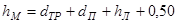
где dТР - диаметр трубы с футеровкой и грузами, м;
dП - диаметр разгружающих понтонов, м;
hЛ - толщина льда, м.
10.19. При прокладке трубопроводов способом свободного погружения в зимних условиях применяют следующие технологические схемы производства работ:
I схема: монтаж плетей трубопровода на берегу; устройство майны на всю ширину зеркала реки или водоема; вывод трубопровода в майну с последовательной стыковкой плетей на берегу; укладка трубопровода на дно траншеи с заполнением его водой;
II схема: монтаж трубопровода из звеньев длиной по 30 - 36 м на льду по створу перехода; устройство майны параллельно смонтированному трубопроводу; спуск трубопровода в майну и укладка его на дно траншеи с заполнением его водой.
При монтаже на льду трубопровод необходимо укладывать на лежки.
10.20. Для предотвращения сноса трубопровода течением во время погружения его на дно реки необходимо устраивать оттяжки. Число оттяжек и расстояние между ними определяются расчетом в зависимости от скорости течения.
Анкерные опоры для закрепления оттяжек устанавливают на льду выше по течению от створа перехода.
Длину оттяжек определяют в зависимости от глубины воды и принимают примерно равной 1,5×Н, где Н - глубина воды.
Расстояние от трубопровода до анкерной опоры при этой длине оттяжек может быть принято равным 1,1 Н.
Анкерные опоры для оттяжек вмораживаются или закрепляются другим способом на льду на указанном расстоянии.
10.21. Укладку трубопровода с опор; установленных на льду, следует применять только при наличии прочного льда. Укладывать трубопроводы с опор следует на переходах, где на береговых участках запроектированы кривые механического гнутья.
10.22. Работы по укладке трубопровода с опор, установленных на льду, рекомендуется выполнять в следующей технологической последовательности:
монтаж трубопровода на льду параллельно оси намеченной прорези или монтаж секций трубопровода на берегу с последующим перемещением их по льду и сваркой в одну нитку;
устройство майны для укладки трубопровода
установка опор на льду;
спуск трубопровода в майну;
погружение трубопровода на дно с промежуточных опор.
10.23. Прокладка подводных кабелей связи в зимних условиях без предварительного обогрева допускается при температуре не ниже -15°С. При температуре, ниже -15° С барабан, с кабелем должен находиться в течение 34 - 48 ч при температуре 35 - 40°С в специальных тепляках для обогрева.
10.24. Монтаж муфт на подводных кабелях при достаточной прочности ледяного покрова выполняют на льду.
10.25. Укладку кабеля на дно водной преграды производят с барабанов, перемещаемых вдоль бровки майны или специальной прорези.
11. ОХРАНА ОКРУЖАЮЩЕЙ СРЕДЫ ПРИ СТРОИТЕЛЬСТВЕ ПОДВОДНЫХ ПЕРЕХОДОВ
11.1. При строительстве подводных переходов через водные преграды следует выполнять требования по охране окружающей среды, изложенные в законе СССР «Об утверждении основ водного законодательства Союза ССР и союзных республик»; Основах водного законодательства: Союза ССР и союзных республик; Положении о государственном контроле за исполнением и охраной вод. (Свод законов СССР, т. 4, М. 1984).
11.2. Строительная организация, ведущая строительство подводного перехода, несёт ответственность за соблюдение решений по охране окружающей среды, предусмотренных проектом организации строительства.
Персональная ответственность за выполнение мероприятий, связанных с защитой водоема от загрязнения, и соблюдение требований рыбнадзора возлагаются на руководителя строительства руслового участка подводного перехода.
11.3. До начала строительства подводного перехода рабочие инженерно-технический персонал должны пройти инструктаж по соблюдению требований охраны окружающей среды при выполнении строительно-монтажных работ.
11.4. При оборудовании строительно-монтажной площадки необходимо предусматривать специальные зоны для технического оборудования, мойки, заправки машин и механизмов. Расположение этих зон должно исключать попадание сточных вод, топлива, масла в проточную воду, на растительность, культурный слой почвы.
При техобслуживании, заправке, ремонте плавучих средств запрещается загрязнение водоемов остатками топлива, масел и обтирочных материалов.
11.5. Производство работ, движение машин и механизмов, складирование и хранение материалов разрешается только в местах, установленных проектом производства работ.
11.6. Захоронение или сжигание остатков лесоматериалов и других отходов, которые невозможно утилизовать, следует производить в специально отведенных местах, указанных в проекте производства работ и оборудованных в противопожарном отношении.
11.7. Плодородный слой почвы на площади, занимаемой береговой траншеей, строительно-монтажной площадкой, а также в местах движения тяжелой гусеничной техники должен быть снят и складирован для использования его в последующем для рекультивации земель. При производстве указанных работ следует строго соблюдать требования проекта рекультивации, составленного в соответствии с требованиями ВСН 004-88/Миннефтегазстрой «Строительство магистральных трубопроводов. Технология и организация».
11.8. Использование плодородного слоя грунта для устройства подсыпок, перемычек и других временных земляных сооружений для строительных целей не допускается.
11.9. При производстве подводных земляных работ земснарядами запрещается использовать пульпопроводы с неисправными уплотнениями и шарнирами, сбрасывающими часть пульпы в места, не отведенные для отвалов.
11.10. При разработке подводных траншей грунторазрабатывающими средствами в воду не должны попадать топливо, масло, производственные и бытовые отходы.
11.11. Разработанный грунт следует удалять путем рефулирования его по пульпопроводу или в шаландах со складированием в подводные и береговые отвалы, расположение которых проектные организации согласовывают с организациями Минречфлота, Минрыбхоза и другими заинтересованными ведомствами.
Складирование извлеченного скального грунта в отвалы, расположенные вблизи створа перехода, допускается с разрешения органов надзора указанных организаций.
11.12. Границы отвала грунта при производстве подводных земляных работ должны быть точно обозначены. Отвал грунта за пределы установленных границ не допускается.
11.13. При складировании грунта в береговые отвалы должно быть исключено попадание его в водоемы при колебаниях уровня воды, поверхностных стоках, волнении и других условиях. Местами складирования грунта на береговых участках могут служить овраги, болота, малопригодные для сельскохозяйственных работ пойменные участки, по согласованию с землепользователем.
11.14. При необходимости складирования грунта на территории низких пойм необходимо устраивать защитные береговые дамбы, исключающие утечку грунта (пульпы) в реку. Для предотвращения потерь грунта при выгрузке и уноса его течением на участках низких пойм рекомендуется сооружать затоны (ковши) для захода шаланд и размещения плавкранов для их разгрузки.
11.15. При планировке берегового откоса запрещается сталкивать грунт в русло реки.
11.16. При разработке подводных траншей взрывным способом, чтобы исключить ущерб ихтиофауне, следует применять короткозамедленные взрывы, а также другие методы снижения гидроударной волны подводного взрыва, согласованные в установленном порядке.
12. ОСНОВНЫЕ ТРЕБОВАНИЯ ПО ОХРАНЕ ТРУДА ПРИ СТРОИТЕЛЬСТВЕ ПОДВОДНЫХ ПЕРЕХОДОВ
12.1. При строительстве подводных переходов в вопросах техники безопасности и производственной санитарии следует руководствоваться СНиП III-4-80, «Правилами техники безопасности при строительстве магистральных стальных трубопроводов». М., Недра, 1982, «Правилами техники безопасности при производстве подводно-технических работ на реках и водохранилищах». М., Транспорт, 1965.
12.2. Перед началом работ на строительстве перехода весь производственный персонал должен пройти обучение и инструктаж по охране труда в соответствии с требованиями ГОСТ 12.0.004-79.
12.3. При устройстве, эксплуатации и ремонте временных электрических установок и сетей на строительных площадках необходимо соблюдать требования по технике безопасности, предусмотренные «Правилами технической эксплуатации электроустановок потребителей и правилами техники безопасности при эксплуатации электроустановок потребителей». М., Энергоатомиздат, 1986.
12.4. Освещение рабочих мест должно соответствовать ГОСТ 12.1.046-85.
12.5. Плавучие технические средства, используемые при разработке подводных траншей и укладке трубопроводов, должны отвечать требованиям Речного регистра РСФСР и быть укомплектованы штатным снаряжением и спасательными средствами.
12.6. При транспортировке плетей трубопровода на плаву следует руководствоваться Правилами пропуска судов, составов и плотов через судоходные шлюзы и Правилами плавания по внутренним судоходным путям. РСФСР. М., Транспорт, 1974. Не допускается причаливание лодок к плети и нахождение на ней людей.
12.7. Хранение, использование и учет взрывчатых веществ должны осуществляться в соответствии с «Едиными правилами безопасности при взрывных работах». М., Недра, 1976.
12.8. При выполнении водолазных работ необходимо руководствоваться «Едиными правилами охраны труда на водолазных работах» РД 31,81.01-79.
12.9. При радиографическом контроле сварочных стыков следует руководствоваться требованиями ГОСТ 12.0.004-79.
12.10. При подъеме и перемещении грузов следует руководствоваться «Правилами устройства безопасной эксплуатации грузоподъемных кранов». М., Металлургия. 1983.
12.11. Транспортировка грузов, кранами или трубоукладчиками разрешается только в пределах строительной площадки.
12.12. При производстве дноуглубительных работ для устройства подводных траншей на переходах следует руководствоваться «Правилами техники безопасности при производстве дноуглубительных работ и обслуживания, специальных механизмов и устройств на дноуглубительных снарядах МРФ РСФСР». М., Транспорт, 1984.
12.13. При эксплуатации плавучего грунтопровода для рефулирования грунта необходимо выполнить следующие требования:
секции плавучего грунтопровода должны быть снабжены ограничительными цепями и ходовым настилом с леерным ограждением высотой не менее 1 м;
плавучий грунтопровод концевой частью должен быть прочно закреплен на якорях или опорах;
плавучий грунтопровод должен быть снабжен спасательными кругами;
для сообщения снаряда с плавучим рефулером должен быть устроен прочно укрепленный подвесной трап с поручнями.
При перевозке плавучего грунтопровода находиться на нем запрещается. Скорость движения буксира с грунтопроводом допускается не более 1 - 2 км/ч.
12.14. При буксировке плети трубопровода к месту укладки необходимо:
иметь по одному буксировщику в головной и хвостовой части трубопровода;
обеспечить надежность крепления трубопровода к буксирующим плавучим средствам;
не зачаливать шлюпки к трубопроводам.
12.15. При протаскивании трубопровода по дну водной преграды с помощью тяговой лебедки необходимо:
надежно прикрепить лебедку к анкерной опоре, рассчитанной на максимальное усилие;
находиться на расстоянии не менее 20 см от тягового, и якорного канатов;
использовать систему дистанционного управления лебедкой;
проверить надежность тягового троса, в случае необходимости испытать его на разрывное усилие;
следить за показаниями динамометра лебедки, не допуская перегрузки троса выше расчетной величины;
наматывать трос на барабан лебедки равномерно, без рывков (прикладывать нагрузку к тросу допускается только после того, как будет выбрана вся слабина троса);
обеспечивать синхронную работу тяговой лебедки и тормозного устройства.
12.16. Понтоны, используемые для укладки трубопроводов, должны быть в исправном состоянии, проверены на герметичность и прочность давлением, соответствующим полуторной глубине опускания.
Понтоны, имеющие устройства автоматической отстроповки, следует отсоединять после вывода судов и плавучих средств за пределы зоны всплытия понтонов. При определении зоны всплытия, указанной в проекте производства работ, учитывать скорость течения.
12.17. При монтаже и укладке трубопровода к работе на кранах-трубоукладчиках допускаются только лица, прошедшие специальное обучение работам на грузоподъемных механизмах, имеющие право на управление и производственный стаж не менее 1 года.
12.18. Во избежание аварии при укладке трубопроводов способом протаскивания по дну перед началом работ следует провести проверочные расчеты с учетом массы трубопровода с грузами, грузоподъемности трубоукладчиков, мощности тяговых средств. В случае аварийной обстановки (повреждение трубопровода, балласта, обрыв тягового троса и т.п.) сигнальщик должен немедленно подать сигнал о прекращении укладки трубопровода.
12.19. При монтаже плетей трубопровода и их перемещении необходимо соблюдать следующие требования:
перед началом работ проверить состояние стальных полотенец, канатов, блоков ч тормозных устройств кранов-трубоукладчиков:
в процессе работ серого соблюдать схему расстановки механизмов, не превышать величины допустимых нагрузок, выноса стрел и высоты подъема трубопровода каждым краном-трубоукладчиком, а в случае выхода их строя одного из кранов-трубоукладчиков немедленно опустить трубопровод на грунт.
На месте работ по подъему, перемещению трубопровода не должны находиться лица, не имеющие прямого отношения к выполнению данных работ.
12.20. Во время протаскивания путь движения трубопровода и тягового троса должен быть освобожден от посторонних предметов (труб, бревен, камней, инструментов и т.п.).
12.21. Монтаж подводных трубопроводов в ночное и темное время суток допускается только при соблюдении следующих условий:
достаточном освещении зоны работ;
наличии соответствующей сигнализации;
непосредственном руководство производителя работ.
ПРИЛОЖЕНИЯ
Приложение 1
Рекомендуемое
МЕХАНИЗМЫ, РЕКОМЕНДУЕМЫЕ ДЛЯ РАЗРАБОТКИ ПОДВОДНЫХ ТРАНШЕЙ
1. Технические средства для разработки подводных траншей, предусмотренные в ППР, рекомендуется выбирать с учетом группы грунтов, глубины водоема, объемов земляных работ согласно табл.1.
Таблица 1
|
Рекомендуемая группа разрабатываемого грунта |
Максимальная глубина, м |
Рекомендуемый объем, тыс. м3 |
|
|
Землесосные снаряды типа: |
|||
|
«Ямал», «Крым» |
I - IV |
20 - 25 |
300 |
|
«Подводник-2» |
I - IV |
25 |
100 |
|
ТЗР-251, ТЗР-151 |
I - IV |
15 - 25 |
50 |
|
ЗРС-Г; ЛС-27 |
I - IV |
9 |
До 50 |
|
ДГС-150 |
I - IV |
12 |
5 |
|
Грунтососы и гидромониторы |
I - IV |
40 |
До 5 |
|
Одноковшовые и многочерпаковые земснаряды типа: |
|||
|
«Самотлор» |
I - VII |
20 |
100 |
|
«Байкал» |
I - VII |
23 |
30 |
|
«Подводник-1» |
I - VII |
20 |
50 |
|
«Подводник-III» |
I - VII |
18 |
30 |
|
Канатно-скреперные установки |
Не ограничена |
До 10 |
|
2. Грунтососы и гидромониторы можно применять, когда транспортировка и использование на строительстве других механизмов, указанных в табл.1, нецелесообразна.
3. Канатно-скреперные установки рекомендуются при разработке траншей в предварительно разрыхленных грунтах; глубине подводной траншеи до 3,0 м; скорости течения менее 0,7 м/с (на реках, сложенных мелкозернистыми и среднезернистыми песками); средней дальности разработки (скреперования) до 150 м.
Целесообразность использования скреперных установок при средней дальности скреперования свыше 150 м должна быть обоснована технико-экономическими расчетами в проекте организации строительства.
Канатно-скреперные установки на илистых грунтах и плывунах применять не следует.
4. Необходимость предварительного рыхления грунтов (известняков, мореных глин и др.) определяют в проекте организации строительства по материалам инженерных изысканий.
5. Производительность технических средств для разработки подводных траншей в мелкозернистых и среднезернистых песках при средних скоростях течения более 0,7 м/с должна превышать расход донных наносов, определяемый инженерными изысканиями.
6. Разработку грунта при устройстве траншеи на подводных переходах рекомендуется выполнять в соответствии с технологической схемой (рис. 1).
Рис. 1. Технологическая схема разработки траншеи на подводных переходах магистральных трубопроводов:
H1 - глубина разработки бульдозером; Н2 - глубина разработки экскаватором (см. табл. 3); Н3 - глубина разработки земснарядом
7. Глубину разработки грунта бульдозерами следует принимать с учетом высоты капиллярного поднятия воды НК, которая для несвязных грунтов составляет 0,5 м, для связных грунтов - 1,0 м.
8. Глубину разработки несвязного грунта из-под воды Н2 экскаватором-драглайном с длиной стрелы 10 -13 м следует определять по табл. 3.
Таблица 3
|
Крутизна рабочего откоса |
Угол естественного откоса, град. |
Глубина разработки Н2, м |
|
|
Пески мелкозернистые |
1:2,75 |
20 |
1,25 |
|
Пески среднезернистые |
1:2,25 |
25 |
2,0 |
|
Пески крупнозернистые |
1:2 |
27 |
2,6 |
Примечание: Связные грунты разрабатывать экскаватором-драглайном нецелесообразно.
Приложение 2
Рекомендуемое
ТЕХНОЛОГИЧЕСКИЕ СХЕМЫ СТРОИТЕЛЬСТВА МАЛЫХ ПЕРЕХОДОВ МАГИСТРАЛЬНЫХ ТРУБОПРОВОДОВ ЧЕРЕЗ РЕКИ
Рис. 1. Разработка подводных траншей болотным экскаватором и экскаватором-драглайном со сланей:
а - специальным болотным экскаватором ЭКБ; б - экскаватором-драглайном со сланей; 1 - экскаватор болотной модификации, 2 - экскаватор-драглайн на сланях; 3 - проектное дно траншеи; 4 - подводная траншея; 5 - отвал грунта
Рис. 2. Разработка подводной траншеи экскаватором с обратной лопатой и драглайном:
а - при глубине реки до 0,5 м; 6 - при работе с насыпной дамбы; 1 - экскаватор с обратной лопатой; 2 - экскаватор-драглайн; 3 - проектное дно траншеи; 4 - дамба; 5 - подводная траншея; 6 - отвал грунта за бровку траншеи
Рис. 3. Последовательность разработки подводной траншеи экскаватором-драглайном:
а - с понтона при глубине воды более 1,5 м; б - при глубине воды до 1,5 и ширине реки до 30 м; 1 - экскаватор-драглайн; 2 - подгон; 3 - проектное дно траншеи; 4 - подводная траншея; 5 - отвал грунта; 6 - трактор; 7 - трос; 8 - якорь
Рис. 4. Разработка подводной траншеи скреперной установкой при расположении двухбарабанной тракторной лебедки на одном берегу:
1 - трактор с двухбарабанной лебедкой; 2 - скреперный ковш; 3 - бульдозер; 4 - отвал грунта; 5 - разрабатываемая траншея; 6 - анкерная опора с хвостовым блоком; 7 - тяговый трос; 8 - головная опора
Рис. 5. Разработка траншей с отводом русла:
1 - отводное русло, разработанное экскаватором; 2 - насыпные дамбы, разбираются экскаватором после укладки и засыпки трубопровода; З - водоотливная установка; 4 - бульдозер, 5 - участок планировки траншеи бульдозером; 6 - экскаватор; 7 - траншея
Рис. 6. Укладка трубопровода протаскиванием по дну:
I - положение русловой плети в начале протаскивания; II - положение плети в процессе протаскивания; 1 - тяговая лебедка; 2 - кран-трубоукладчик; 3 - анкер; 4 - тяговый трос; 5 - оголовок; 6 - грунтовая дорожка; 7 - разработанная траншея; 8 - русловая плеть трубопровода
Рис. 7. Укладка трубопровода с одной кривой механического гнутья:
а - общий профиль; б - начало протаскивания; в - разворот трубопровода в вертикальное положение; I - положение русловой плети в процессе протаскивания; II - проектное положение трубопровода; 1 - тяговая лебедка; 2 - кран-трубоукладчик; 2 - анкер; 4 - тяговый трос; 5 - грунтовая спусковая дорожка; 6 - разработанная траншея; 7 - оголовок; 8 - русловая плеть
Рис. 8. Укладка трубопровода с двумя кривыми механического гнутья:
а - общий профиль; б - начало протаскивания; в - в процессе протаскивания; I - положение русловой плети в процессе протаскивания; II - проектное положение трубопровода; III - узел крепления тягового троса; 1 - бульдозер; 2 - кран-трубоукладчик; 3 - сферическая заглушка; 4 - тяговый трос; 5 - грузы; 6 - грунтовая дорожка; 7 - разработанная траншея; б - русловая плеть трубопровода; 9 - удавка; 10 - тяговый трос; 11 - шлаги
Рис. 9. Укладка трубопровода с дамбы:
I - положение русловой плети в процессе укладки; II - проектное положение русловой плети; 1 - кран-трубоукладчик; 2 - бульдозер; 3 - русловая плеть трубопровода; 4 - разработанная траншея; 5 - дамба; 6 - водопропускные трубы; 7 - тросовая оттяжка
Приложение 3
Рекомендуемое
ТИПЫ БЕРЕГОУКРЕПЛЕНИЯ И УСЛОВИЯ ИХ ПРИМЕНЕНИЯ НА ПОДВОДНЫХ ПЕРЕХОДАХ ТРУБОПРОВОДОВ
|
Тип крепления берега |
Условия производства работ |
Рекомендуемое время года для устройства защитного покрытия |
|
||||
|
Защитное покрытие |
Подготовка под защитное покрытие |
Характер водной преграды |
Границы работ |
Максимальная крутизна откоса |
|||
|
Выше проектного уровня |
Ниже проектного уровня |
|
|||||
|
1 |
2 |
3 |
4 |
5 |
6 |
7 |
|
|
Наброска камня |
Отсыпка гравия (щебня) отсыпка слоя щебня по НСМ |
Водохранилища и судоходные реки |
Выше и ниже проектного уровня |
1:2,5 |
Любой |
Любой, кроме периода ледохода и паводков |
|
|
Покрытия из крупноразмерных железобетонных плит |
Отсыпка гравия (щебня) Укладка НСМ |
То же |
Выше проектного уровня |
1:2,0 |
- |
То же |
|
|
Покрытия из гибких железобетонных плит |
Укладка НСМ |
Судоходные реки |
Выше и ниже проектного Уровня |
1:2,0 |
- |
- |
|
|
Отсыпка щебня и гравии |
Укладка НСМ без подготовки |
Судоходные и несудоходные реки |
То же |
1:3,0 |
- |
- |
|
|
Закрепление грунта |
Без подготовки |
То же |
Выше проектного уровня |
1:1,5 |
Летне-осенний период при плюсовой температуре воздуха |
- |
|
|
Гибкое покрытие из отходов вторичной переработки автопокрышек: |
- |
- |
- |
- |
- |
- |
|
|
с засыпкой гравием или щебнем |
- |
- |
То же |
- |
Любой |
- |
|
|
засыпкой песчаным грунтом |
Укладка НСМ |
- |
Выше и ниже проектного уровня |
- |
Летне-осенний |
Любой, кроме периода ледохода и паводков |
|
|
Маты из НСМ с заполнителем |
Без подготовки |
- |
То же |
1:3,0 |
То же |
паводков |
|
|
Решетчатые покрытия с заполнением ячеек гравием, щебнем, камнем |
Укладка НСМ |
- |
Выше проектного уровня |
1:2,5 |
Летне-осенний |
- |
|
ПРИЛОЖЕНИЕ 4
Справочное
ОПРЕДЕЛЕНИЕ НЕСУЩЕЙ СПОСОБНОСТИ ЛЕДЯНОГО ПОКРОВА
1. Влияние различных факторов, учитываемых в ПОС и ППР на несущую способность ледяного покрова
1.1. Несущая способность ледяного покрова зависит от его толщины и прочности, которая в свою очередь зависит от структуры льда, температуры воздуха, наличия трещин, времени нахождения груза на льду.
1.2. В проекте организации строительства и производства работ должна быть указана расчетная (допустимая) толщина ледяного покрова, определяемая по материалам инженерных изысканий.
Приведенная толщина ледяного покрова учитывает фактическую структуру и прочность отдельных слоев льда.
1.3. Толщина льда на реках и водоемах зависит от климатических условий района и гидрологических характеристик.
После ледостава до появления снега наращение льда идет в основном под влиянием отрицательных температур воздуха. Темп наращения льда замедляется пропорционально увеличению толщины снегового покрова.
На толщину льда влияет также скорость течения, характеристика дна реки или водоема, грунтовые воды. Ледяной покров тоньше на фарватере реки, при выходе рек из озера, на перекатах, возле ключей и родников, над торфяным дном, у болотистых берегов.
1.4. Механические свойства льда зависят главным образом от его структуры.
Наиболее прочным является прозрачный лед. При ударе топора он дает стекловидный раковистый излом с закругленными поверхностями. Весной он распадается сначала на столбчатые призмы, а в дальнейшем - на заостренные плоские пластины (иглы).
Мутный белесоватый лед имеет меньшую прочность. В период весеннего таяния он распадается, образуя рыхлую массу ноздреватого типа. Процесс разрушения мутного льда идет медленнее, чем прозрачного.
Слой снегового льда (наслуд), представляющий собой смерзшийся снеговой покров, пропитанный водой, имеет незначительную прочность, особенно весной.
1.5. Прочность льда зависит также от его температуры: при повышении температуры прочность льда уменьшается. Так, при повышении температуры от -10 до 0° прочность льда уменьшается примерно в 1,5 - 2 раза. Средние прочностные характеристики кристаллического льда приведены в табл. 1.
Таблица 1
|
на сжатие |
на растяжение |
на изгиб |
на срез |
на перелом при динамических нагрузках |
|
30 - 40 |
10 - 12 |
12 - 16 |
9 - 11 |
4 - 6 |
Наиболее резкое снижение прочности льда наблюдается весной и происходит как, за счет нагрева его до температуры плавления, так и вследствие поглощения льдом лучистого тепла солнечной радиации. Разрушение льда, не покрытого снегом, в весенний период идет интенсивно, достигая в отдельные дни 10 - 15 см в сутки.
1.6. Трещины в ледяном покрове, которые в зависимости от температуры воздуха расширяются или сужаются, резко снижают несущую способность льда. Особенно большую опасность представляют мокрые сквозные трещины: при передвижении груза поперек трещин грузоподъемность снижается примерно в 4 раза.
2. Определение приведенной толщины льда
2.1. Приведенная толщина льда hПР определяется как сумма толщин слоев льда: нижнего прозрачного hП и половины толщины верхнего мутного hМ. Слой льда, образовавшийся из снегового покрова, пропитанного водой (наслуд), в расчет не принимается.
Приведенную толщину льда определяют из выражения
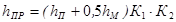
где hПР - замеренная толщина нижнего прозрачного слоя льда;
hП - замеренная толщина мутного слоя льда;
hМ - коэффициент, зависящий от структуры льда.
К1 - коэффициент, зависящий от структуры льда. При раковистой структуре К1 = 1, при игольчатой К1 = 0,66
К2 - коэффициент, зависящий от температуры. При температуре воздуха ниже 0°С К2 = 1, при температуре выше 0°С К2 = 0,8.
2.2. Для определения приведенной толщины льда в местах предполагаемого размещения оборудования и движения транспорта устанавливают фактическую толщину льда и его состояние.
2.3. Толщину льда вдоль проектируемых трасс трубопровода и движения транспорта измеряют через каждые 20 м на реках и через 100 м на озерах. Для замеров прорубают лунки.
Перед пробивкой лунок поверхность льда необходимо очистить от рыхлого и смерзшегося снега (наслуда).
2.4. Для определения толщины и строения ледяного покрова образцы вырезают в наиболее характерных местах (на фарватере, у берегов, вблизи полыней). На образцах должна быть измерена толщина прозрачного и мутного льда.
При оттепели образцы необходимо испытать на излом ударом топора, чтобы выяснить, не приобрел ли лед игольчатую структуру.
2.5. Данные обследования трасс и замеров толщины льда наносят на план, на котором обозначают точки замеров, указывают толщины льда, местоположение трещин ч прочих опасных мест ледяного покрова.
2.6. При мокрых сквозных трещинах размещение грузов и движение транспорта не допускается. Если же трещины сухие несквозные шириной меньше 3 - 4 см и глубиной не более 0,5 толщины льда, в формуле (1) приведенную толщину льда следует уменьшить на 50%.
3. Расчетная толщина ледяного покрова
3.1. Расчетная толщина льда определяется в зависимости от вида груза, массы, его расположения относительно прорези, а также температуры воздуха и прочности льда.
3.2. Расчетная толщина льда, необходимая для размещения груза на сплошном ледяном покрове (при отсутствии вблизи груза майны), может быть определена по формуле
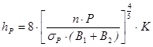
где hР - расчетная толщина прозрачного льда кристаллической структуры, м;
п - запас прочности, равный 2;
Р - масса груза, установленного на лед, т;
sР - временное сопротивление льда на растяжение, т/м (среднее значение 140 т/м );
В1, В2 - линейные размеры площади опоры груза, м;
К - температурный коэффициент, учитывающий среднесуточную температуру воздуха за последние трое суток, принимаемый по табл.2.
Таблица 2
|
-10°С и ниже |
-5°С |
0°С |
Выше 0°С |
|
|
Температурный коэффициент К |
1,0 |
1,1 |
1,4 |
1,5 и выше |
3.3. Расчетная толщина льда для размещения груза на ледяном покрове, имеющем прорезь (майну), может быть определена по формуле
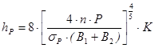
где В1 - длина опоры, параллельной прорези, м (см. рисунок);
В2 - длина опоры, перпендикулярной к прорези, м (см. рисунок).
Прочие обозначения аналогичны принятым для формулы (2). При размещении груза на ледяном покрове около прорези (майны) расстояние от опоры груза до края майны не должно быть меньше 2,0 м (см. рисунок).
3.4. Для предварительных расчетов толщину льда при отсутствии в ледяном покрове майн и трещин можно определять из выражения:
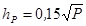
где hР - толщина льда, м;
Р - масса груза, т.
3.5. При динамический нагрузках на лед (работающие экскаваторы, буровые станки и т.п.) толщина льда, определенная по формулам (2), (3) и (4), должна быть увеличена не менее чем в 2 раза.
3.6. Если трубопровод, подготавливаемый к опусканию со льда, находится около прорези, расчетную толщину льда определяют по формуле.
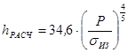
где hРАСЧ - расчетная толщина льда, м;
Р - масса 1 м трубопровода, т;
sИЗ - предел прочности льда на изгиб, т/м.
3.7. Время пребывания груза на льду должно быть ограничено во избежание его погружения в лед.
Максимально допустимое время пребывания груза на льду можно определить по формуле
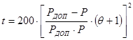
где Р - масса груза, находящегося на льду, т;
РДОП - допустимая нагрузка для льда данной толщины, определяемая по формуле
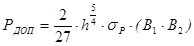
q - коэффициент, зависящий от условий работы и температуры воздуха (табл.3);
В1, В2 - линейные размеры площади опоры груза, м.
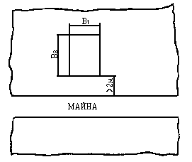
Расположение груза на льду у края прорези (майны).
Таблица 3
|
Характер покрова и груза |
Значение коэффициента |
|
Стоянка груза на расчищенном от снега или покрытом водой льду при любой температуре. Стоянка долговременных сооружений (срубы, настилы и т.п.) |
0 |
|
Стоянка грузов на расчищенном или частично расчищенном льду при температуре -5° |
0 |
|
Стоянка грузов на расчищенном от снега льду при температуре ниже -5° и на частично расчищенном от снега льду при температуре -10° |
1 |
|
.Стоянка грузов на расчищенном от снега льду при температуре -10° и на частично расчищенном льду при температуре -15° |
2 |
|
Стоянка грузов на расчищенном от снега льду при температуре ниже -15° |
3 |
4. Методы усиления ледяного покрова
4.1. При недостаточной прочности льда следует увеличить его толщину намораживанием.
Прирост толщины льда в результате расчистки снегового покрова без полива дается в табл. 4.
Таблица 4
|
Прирост толщины льда за 1 сутки (см) при ледяном покрове |
|||
|
меньше 10 см |
10 - 20 см |
21 - 40 см |
|
|
-5 |
4 |
1,5 |
0,5 |
|
-10 |
6 |
3,0 |
1,5 |
|
-15 |
8 |
4,0 |
2,0 |
|
-20 |
9 |
6,0 |
3,0 |
Усиление льда намораживанием производится при температуре воздуха не выше - 5°С.
Коэффициенты увеличения грузоподъемности ледяного покрова приведены в табл.5.
Таблица 5
|
Отношение толщины намороженного льда к толщине естественного льда |
Коэффициент увеличения грузоподъемности естественного ледяного покрова |
|
0 |
1,0 |
|
0,2 |
1,3 |
|
0,4 |
1,7 |
|
0,6 |
2,0 |
|
0,8 |
2,4 |
|
1,0 |
2,9 |
4.2. Намораживание льда можно производить:
поливкой водой с разбрызгиванием;
укладкой слоя ледяного щебня с последующей заливкой водой. Заливка водой с разбрызгиванием производится с перерывами, слоем воды 1 - 2 см.
4.3. Намораживание укладкой слоя ледяного щебня толщиной 10 - 15 см с последующей заливкой водой ускоряет наращение ледяного покрова и придает ему большую прочность. Каждый следующий полив производится после того, как предыдущий слой полностью промерзнет.
ПРИЛОЖЕНИЕ 5
Справочное
ХАРАКТЕРИСТИКА ТРУБ
|
Диаметр, мм |
Толщина стенки, мм |
Площадь сечения, см |
Осевой момент, см |
Осевой момент сопротивления, см |
||
|
Наружный диаметр |
Внутренний диаметр |
|||||
|
1 |
2 |
3 |
4 |
5 |
6 |
|
|
325 |
307 |
9 |
89,3 |
11160 |
687 |
|
|
305 |
10 |
99 |
12290 |
756 |
||
|
301 |
12 |
118 |
14470 |
891 |
||
|
297 |
14 |
137 |
16570 |
1020 |
||
|
377 |
361 |
8 |
92,7 |
15820 |
839 |
|
|
357 |
10 |
115 |
19430 |
1031 |
||
|
255 |
11 |
126 |
21200 |
1125 |
||
|
353 |
12 |
138 |
22940 |
1217 |
||
|
349 |
14 |
160 |
26340 |
1397 |
||
|
345 |
16 |
181 |
19650 |
1573 |
||
|
426 |
408 |
9 |
118 |
25650 |
1204 |
|
|
404 |
11 |
143 |
30900 |
1451 |
||
|
402 |
12 |
156 |
33470 |
1572 |
||
|
398 |
I4 |
181 |
38500 |
1808 |
||
|
394 |
16 |
206 |
43440 |
2039 |
||
|
530 |
511 |
9 |
147 |
49720 |
1880 |
|
|
509 |
10 |
163 |
54930 |
2077 |
||
|
505 |
12 |
195 |
65170 |
2464 |
||
|
501 |
14 |
227 |
75170 |
2842 |
||
|
497 |
16 |
258 |
84950 |
3212 |
||
|
720 |
702 |
9 |
201 |
127000 |
3530 |
|
|
700 |
10 |
223 |
140600 |
3906 |
||
|
696 |
12 |
267 |
167030 |
4648 |
||
|
692 |
14 |
310 |
193600 |
5378 |
||
|
688 |
16 |
353 |
219600 |
6100 |
||
|
820 |
800 |
10 |
254 |
208800 |
5092 |
|
|
796 |
12 |
305 |
248700 |
6066 |
||
|
792 |
14 |
354 |
288000 |
7025 |
||
|
788 |
16 |
403 |
327000 |
7976 |
||
|
784 |
18 |
453 |
365200 |
9023 |
||
|
780 |
20 |
502 |
402500 |
9816 |
||
|
1020 |
996 |
12 |
380 |
482800 |
9467 |
|
|
992 |
14 |
442 |
560000 |
10980 |
||
|
988 |
16 |
504 |
636000 |
124800 |
||
|
984 |
18 |
566 |
712000 |
139600 |
||
|
980 |
20 |
628 |
785900 |
154100 |
||
|
1220 |
1196 |
12 |
455 |
834200 |
I363J |
|
|
1192 |
14 |
530 |
964700 |
15910 |
||
|
1190 |
15 |
568 |
1032000 |
16920 |
||
|
1188 |
16 |
605 |
1102000 |
18060 |
||
|
1184 |
18 |
680 |
1226000 |
20100 |
||
|
1180 |
20 |
754 |
1363000 |
22340 |
||
|
1420 |
1388 |
16 |
706 |
1740000 |
24520 |
|
|
1382 |
19 |
836 |
2053000 |
28920 |
||
|
1380 |
20 |
879 |
2215600 |
30370 |
||
|
1376 |
22 |
966 |
2363000 |
33280 |
||
|
1372 |
24 |
1053 |
2567000 |
36160 |
||
ПРИЛОЖЕНИЕ 6
Справочное
Таблица 1
ВЕСОВЫЕ ХАРАКТЕРИСТИКИ ТРУБ С КОЛЬЦЕВЫМИ ГРУЗАМИ ТИПА 2-УТК
|
Вес стальной трубы с изоляцией и футеровкой, кН/м |
Плавучесть заглушенной трубы с изоляцией и футеровкой, кН/м |
Нормативная балластировка, трубы при gd=300кг/м3 (в воздухе), кН/м |
Марка утяжелителя |
Длина утяжелителя, м |
Объем бетона утяжелителя из двух полуколец при gd=2300 кг/м3 |
Расстояние между утяжелителями в свету, м |
Отрицательная плавучесть трубы с утяжелителем, кН/м |
|
|
1 |
2 |
3 |
4 |
5 |
6 |
7 |
8 |
9 |
|
1020х16 |
4,73 |
4,38 |
12,76 |
2УТК-1020-24-1 |
2,4 |
1,41 |
0,09 |
-2,83 |
|
1020х18 |
5,21 |
3,90 |
11,70 |
0,32 |
-2,71 |
|||
|
1020х20 |
5,68 |
3,43 |
19,65 |
0,59 |
-2,59 |
|||
|
1020х12 |
3,77 |
5,34 |
14,89 |
2-УТК-1020-24-2 |
2,4 |
1,77 |
0,28 |
-3,08 |
|
1020х14 |
4,26 |
4,86 |
13,82 |
0,49 |
-2.95 |
|||
|
1020х16 |
4,73 |
4,38 |
12,76 |
0,73 |
-2,83 |
|||
|
1020х18 |
5,21 |
3,90 |
11,70 |
1,01 |
-2,71 |
|||
|
1020х20 |
5,68 |
3,43 |
10,65 |
1,35 |
-2,59 |
|||
|
1220х18 |
6,24 |
6,53 |
18,75 |
2-УТК-1220-24-1 |
2,4 |
2,00 |
0,01 |
-4,07 |
|
1220х20 |
6,81 |
5,96 |
17,49 |
0,18 |
-3,92 |
|||
|
1220х12 |
4,51 |
8,26 |
22,62 |
2-УТК-1220-24-2 |
2,4 |
2,56 |
0,15 |
-4,52 |
|
1220х14 |
5,10 |
7,68 |
21,30 |
0,31 |
-4,36 |
|||
|
1220х15,2 |
5,44 |
5,34 |
20,54 |
0,41 |
-4,27 |
|||
|
1220х16 |
5,67 |
7,11 |
20,03 |
0,48 |
-4,21 |
|||
|
1220х18 |
6,24 |
6,53 |
18,75 |
0,68 |
-4,07 |
|||
|
1220х20 |
6,81 |
5,96 |
17,49 |
0,90 |
-3,92 |
|||
|
1420х16.5 |
6,70 |
10,26 |
28,42 |
2-УТК-1420-24-2 |
2,4 |
3,54 |
0,41 |
-5,81 |
|
1420х18,7 |
7,44 |
9,52 |
26,78 |
0,58 |
-5,62 |
|||
|
1420х19,5 |
7,71 |
9,25 |
26,19 |
0,65 |
-5,55 |
|||
|
1420х20 |
7,37 |
9,09 |
25,83 |
0,69 |
-0,01 |
|||
|
1420х22 |
8,54 |
8,42 |
24,34 |
0,83 |
-5,34 |
|||
|
1420х24 |
9,21 |
7,75 |
22,86 |
1,09 |
-5,17 |
Примечание: gd - объемный вес бетона, кг/м
Таблица 2
ВЕСОВЫЕ ХАРАКТЕРИСТИКИ ОБЕТОНИРОВАННЫХ ТРУБ С ПОКРЫТИЕМ ТИПА ПЖУ
|
Вес стальной трубы с изоляцией кН/м |
Плавучесть заглушенной трубы с изоляцией, кН/м |
gd=2300 кг/м3 |
|||||||||
|
Нормативная балластировка трубы (в воздухе), кН/м |
Диаметр обетонированной трубы, мм |
Толщина бетонного покрытия, мм |
Плавучесть заглушенной обетонированной трубы, кН/м |
Нормативная балластировка трубы (в воздухе), кН/м |
Диаметр обетонированной трубы, мм |
Толщина бетонного покрытия, мм |
Плавучесть заглушенной обетонированной трубы, кН/м |
||||
|
1 |
2 |
3 |
4 |
5 |
6 |
7 |
8 |
9 |
10 |
11 |
|
|
426х9 |
0,93 |
0,49 |
1,57 |
523 |
46,5 |
-0,39 |
- |
- |
- |
- |
|
|
426х11 |
1,12 |
0,30 |
1,141) |
499 |
34,51) |
-0,34 |
- |
- |
- |
- |
|
|
426х12 |
1,22 |
0,20 |
0,931) |
487 |
28,51) |
-0,32 |
- |
- |
- |
- |
|
|
426х14 |
1,41 |
0,01 |
0,501) |
461 |
15,51) |
-0,27 |
- |
- |
- |
- |
|
|
426х16 |
1,61 |
0,18 |
0,07 |
434 |
2 |
-0,22 |
- |
- |
- |
- |
|
|
530х9 |
1,16 |
1,03 |
3,01 |
674 |
70,5 |
-0,67 |
- |
- |
- |
- |
|
|
530х10 |
1,29 |
0,90 |
2,73 |
662 |
64,5 |
-0,64 |
- |
- |
- |
- |
|
|
530х12 |
1,53 |
0,66 |
2,19 |
639 |
53 |
-0,58 |
- |
- |
- |
- |
|
|
530х14 |
1,77 |
0,42 |
1,65 |
614 |
40,51) |
-0,52 |
- |
- |
- |
- |
|
|
530х16 |
2,01 |
0,18 |
1,12 |
589 |
28 |
-0,46 |
- |
- |
- |
- |
|
|
720х9 |
1,59 |
2,45 |
6,78 |
952 |
114 |
-1,33 |
5,50 |
873 |
74,5 |
-1,22 |
|
|
720х10 |
1,76 |
2,28 |
6,41 |
941 |
108,5 |
-1,34 |
5,20 |
866 |
71 |
-1,19 |
|
|
720х12 |
2,09 |
1,94 |
5,65 |
918 |
97 |
-1,25 |
4,59 |
850 |
63 |
-1,12 |
|
|
720х14 |
2,43 |
1,60 |
4,80 |
895 |
85,5 |
-1,17 |
3,98 |
834 |
55 |
-1,05 |
|
|
720х16 |
2,77 |
1,27 |
4,17 |
871 |
73,5 |
-1,08 |
3,38 |
819 |
47,5 |
-1,98 |
|
|
620х10 |
2,00 |
3,22 |
8.90 |
1087 |
131,5 |
-1,81 |
7,22 |
996 |
86 |
-1,59 |
|
|
620х12 |
2,39 |
2,84 |
8,04 |
1064 |
120 |
-1,71 |
6,53 |
980 |
78 |
-1,51 |
|
|
620х14 |
2,73 |
2,45 |
7,18 |
1041 |
108,5 |
-1,61 |
5,83 |
965 |
70,5 |
-1,44 |
|
|
820х16 |
3,16 |
2,07 |
6,33 |
1018 |
97 |
-1,51 |
5,14 |
949 |
62,5 |
-1,36 |
|
|
820х18 |
3,54 |
1,69 |
5,49 |
994 |
85 |
-1,41 |
4,46 |
934 |
55 |
-1,28 |
|
|
820х20 |
3,91 |
1,31 |
4,66 |
970 |
73 |
-1,32 |
3,78 |
918 |
47 |
-1,21 |
|
|
1020х12 |
2,98 |
5,09 |
13,99 |
1356 |
166 |
-2,82 |
11,36 |
1241 |
108,5 |
-2,48 |
|
|
1020х14 |
3,47 |
4,61 |
12,92 |
1333 |
154,5 |
-2,69 |
10,49 |
1226 |
101 |
-2,38 |
|
|
1020х16 |
3,94 |
4,13 |
11,86 |
1311 |
143,5 |
-2,57 |
9,63 |
1210 |
93 |
-2,29 |
|
|
1020х18 |
4,42 |
3,65 |
10,80 |
1288 |
132 |
-2,45 |
8,77 |
1195 |
85,5 |
-2,19 |
|
|
1020х20 |
4,89 |
3,18 |
9,75 |
1264 |
120 |
-2,33 |
7,92 |
1179 |
77,5 |
-2,10 |
|
Примечание: Толщину бетонного покрытия следует принимать не менее 30 мм с учетом технлогии нанесения покрытий на трубопровод и защиты арматуры от коррозии. Изоляция трубополимерная, толщина - 2 мм.
ПРИЛОЖЕНИЕ 7
Справочное
ЗНАЧЕНИЯ КОЭФФИЦИЕНТОВ ТРЕНИЯ СКОЛЬЖЕНИЯ И КОЭФФИЦИЕНТОВ ТРОГАНИЯ ДЛЯ РАСЧЕТОВ ТЯГОВЫХ УСИЛИЙ
Таблица 1
|
Коэффициент трения скольжения |
|
|
Разрушенная скала, скальные грунты |
0,8 |
|
Пески крупные и гравелистые |
0,65 |
|
Пески среднезернистые |
0,6 |
|
Мелкие пески и супеси |
0,55 |
|
Супеси |
0,45 |
|
Суглинки |
0,4 |
|
Глины |
0,35 |
Таблица 2
|
Коэффициент трогания |
|
|
На береговом участке: с помощью спусковых устройств в виде рельсовой или роликовой дорожки; |
1,5 |
|
по грунту |
2 |
|
Под водой: с остановкой во время протаскивания Э (менее суток) и при любом грунте дна водоема; |
2 |
|
с остановкой во время протаскивания более суток и грунте дна водной преграды (галечник, гравий, скала); |
2 |
|
с остановкой вовремя протаскивания более суток и грунте дна водной преграды (песок, супесь, суглинки, глина, ил) |
2,5 |
Приложение 8
Справочное
Перечень исполнительной документации на строительство подводных переходов магистральных трубопроводов
(согласно BCН 012-88/Миннефтегазстрой)
|
Формы исполнительной документации |
№ |
|
1 |
2 |
|
Акт на закрепление трассы (площадки) |
2,1 |
|
Акт на геодезическую подготовку трассы (площадки) |
3,1 |
|
Разрешение на право производства работ |
2,2 |
|
Список сварщиков |
2,3 |
|
Допускной лист сварщика |
3,2 |
|
Журнал сварки труб. Приложение - Схема сварных стыков |
2,6 |
|
Заключение по проверке качества сварных соединений физическими методами контроля |
2,9 |
|
Заключение по ультразвуковому контролю качества сварных соединений |
2,10 |
|
Журнал проверки сварных соединений физическими методами контроля |
3,4 |
|
Журнал регистрации результатов механических испытаний допускных и контрольных сварных соединений |
3,5 |
|
Журнал поэтапной приемки подводного перехода под укладку |
2,27 |
|
Акт на приемку готовой траншеи для укладки основной или резервной нитки подводного перехода. Приложение - Ведомость проектных и фактических отметок дна траншей по оси нитки перехода трубопровода через водную преграду |
3,7 |
|
Акт испытания на прочность, проверки на герметичность и на вытеснение испытательной среды после испытания трубопровода |
2,21 |
|
Разрешение на укладку трубопровода через водную преграду протаскиванием. Приложение - Ведомость проектных и фактических отметок промеров глубин дна траншеи по оси нитки перехода трубопровода через водяную преграду перед протаскиванием |
2,28 |
|
Акт на проверку укладки трубопровода в створе перехода через водную преграду. Приложено - Ведомость отметок заложения трубопровода на переходе через водную преграду |
2,29 |
|
Акт на берегоукрепительные и дноукрепительные работы |
2,30 |
|
Разрешение на право производства предварительного (поэтапного) испытания трубопроводов и участков категории B.I. |
2,22 |
|
Акт оценки качества изоляции законченных строительством участков подводного трубопровода методом катодной поляризации |
2,17 |
|
Акт промежуточной приемки перехода трубопровода через водную преграду |
2,31 |
СОДЕРЖАНИЕ